扉页
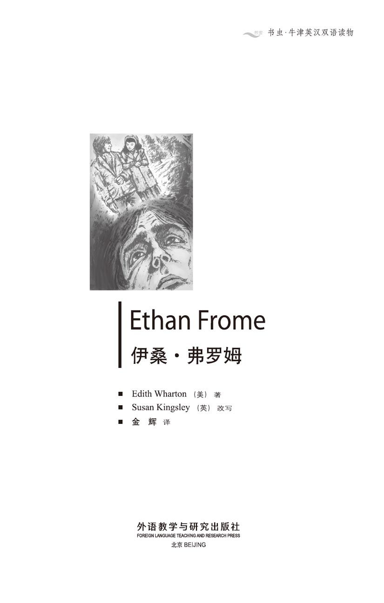
版权页
京权图字01-2006-3301
Originally published by Oxford University Press, Great Clarendon Street, Oxford. ©2000
This edition is licensed for sale in the People's Republic of China only and not for export therefrom.
'Oxford' is a registered trademark of Oxford University Press.
只限中华人民共和国境内销售，不包括香港特别行政区、澳门特别行政区及台湾省。不得出口。
图书在版编目（CIP）数据
伊桑·弗罗姆 = Ethan Frome／（美）华顿（Wharton, E.）著；（英）金斯利（Kingsley, S.）改写；金辉译．—北京：外语教学与研究出版社，2007.7（2014.4 重印）
（书虫·牛津英汉双语读物）
ISBN 978-7-5600-6816-9
Ⅰ．伊… Ⅱ．①华…②金…③金… Ⅲ．①英语—汉语—对照读物②长篇小说—美国—近代 Ⅳ．H319.4：I
中国版本图书馆CIP数据核字（2007）第104902号
出版人： 蔡剑峰
责任编辑：王霖霖
封面设计：孙莉明
出版发行：外语教学与研究出版社
社 址：北京市西三环北路19号（100089）
网 址：http://www.fltrp.com
版 次：2007年7月第1版
书 号：ISBN 978-7-5600-6816-9
* * *
凡侵权、盗版书籍线索，请联系我社法律事务部
举报电话：（010）88817519
电子邮箱：banquan@fltrp.com
法律顾问：立方律师事务所 刘旭东律师
中咨律师事务所 殷 斌律师
内容简介
内容简介
20世纪早期，马萨诸塞州农场上的生活并不轻松。新英格兰地区的冬季气候恶劣，冰雪覆盖大地长达数月之久，夜晚漫长而寒冷。像伊桑·弗罗姆这样的穷苦农民，生活中很少有快乐的时候。
伊桑是个慢性子，少言寡语的，但他对事物的感受很强烈，他感受着身边世界的美丽——没有月亮的夜晚，星星在天空中闪烁；阳光映照的白雪上，树木投下蓝色的影子。他体味着生活中那份悲哀的孤独——囚禁在无爱的婚姻中，妻子齐娜冷漠寡言，只在乎自己的病情。但齐娜的表妹玛蒂·西尔弗来到了农场，与他们住在一起。时间一个月一个月地过去，一种幸福感悄悄地进入了伊桑的生活。他喜欢隔着餐桌注视玛蒂的脸庞，看她甜美的笑容，听她柔和的声音，和她手挽手走过雪野。
齐娜很少说什么，可她那双冷酷、警觉的眼睛却能看到一切……
ETHAN FROME
ETHAN FROME
In the early years of the 20th century, life on a farm in Massachusetts is not easy. The New England winters are hard; snow and ice cover the fields for months, and the nights are long and cold. For a poor farmer like Ethan Frome, life has few bright moments.
Ethan is a slow, quiet man, but he feels things strongly. He feels the beauty of the world around him — stars shining in a moonless sky, the blue shadows of trees on sunlit snow. He feels the sad loneliness of his life, locked in a loveless marriage to Zeena, a cold, silent woman, whose only interest is her own ill health. Then Zeena's cousin, Mattie Silver, comes to live in the farmhouse, and as the months pass, Ethan feels a new happiness stealing into his life. He loves to watch Mattie's face across the dinner table, to see her sweet smile and hear her soft voice, to walk arm in arm with her across the snowy fields.
His wife Zeena says very little, but her cold, watchful eyes see everything...
目录
1．Beginnings
1
Beginnings
If you know Starkfield, Massachusetts, you know the post office there. If you know the post office, you have probably seen Ethan Frome driving up to it in his buggy; and you have probably wondered who he was.
It was there that, several years ago, I saw him for the first time. He was a noticeable figure. His tall, strong body was badly twisted, and much shorter on the right side than on the left. He moved slowly and painfully, pulling himself along. Just the few steps from his buggy to the post office were clearly difficult for him. His face had a sad, grim look. It was the face and body of an old man, and I was surprised to hear that he was only fifty-two.
I learnt this from Harmon Gow, a man who knew all the families around Starkfield.
'He's been like that since his bad accident, nearly twenty-four years ago,' said Harmon. 'But Fromes don't die young. Ethan'll live to a hundred, probably.'
'He looks like a dead man already,' I said.
'I guess he's been in Starkfield too many winters,' said Harmon. 'Most smart people get out of here.'
'Why didn't he get out?' I asked.
'He had to stay and take care of his family — first his father got hurt, then his mother fell sick, then his wife.'
'And then the accident?'
Harmon gave a little smile. 'That's right. He had to stay then.'
Ethan Frome used to drive in from his farm every day at about midday, and because I picked up my mail at about the same time, I often saw him. He came to the post office only for a newspaper, and sometimes for a packet from a medicine company for 'Mrs Zeena Frome'. Starkfield people understood that he did not want to stop and talk, and on most days Frome climbed slowly back into his buggy and drove away without a word to anyone.
At that time my company had sent me on an engineering job near Starkfield, and I was staying at the home of a lady called Mrs Ruth Hale. Before she was married, her name had been Ruth Varnum, but her husband Ned Hale was now dead, and she had returned to live with her mother in the Varnum home. It was a grand house, large and white, with tall dark trees outside. Although it was clear that the Varnums no longer had much money, theirs was still the finest house in the village.
Ruth Hale enjoyed talking about her neighbours, and I hoped that she could tell me more about Ethan Frome. But when I asked her, she just looked unhappy and said in a low voice:
'Yes, I knew them both... it was awful...'
I asked other people, and everybody in Starkfield agreed that Ethan Frome had had more troubles in his life than most people. But nobody explained why he had that sad, grim look on his face.
In the end, I learnt the story, piece by piece, from several people. As often happens, the story was different each time, but I slowly began to put it together. And my interest in Ethan Frome grew stronger when — a little later — I met the man himself.
It happened like this. Every day I had to travel about three miles to the station, where I got my train to work. I usually hired a horse from Denis Eady, the rich village shopkeeper. But in the middle of winter his and most of the other Starkfield horses caught an illness. For a day or two I could not find a horse to hire anywhere, until Harmon Gow had an idea.
'Why don't you ask Ethan Frome to drive you?' He said. 'His horse ain't sick, and he needs a dollar or two. That Frome farm and saw-mill don't make enough money to keep a cat alive.'
So Ethan Frome agreed to drive me, and every day for a week I sat beside him in his sleigh as his thin horse pulled us over the hard snow to the station. Then, in the icy evenings, he brought me back to Starkfield.
He was not unfriendly, but during the hour's drive he never turned to look at me, and spoke very little. Once I said something about Florida and he told me that he had been there. Another time he showed interest in a science book of mine, which I had left in his sleigh by mistake in the morning. But most of the time Frome drove without a word, and I began to feel that he was like the land around him. This sad, silent man and the snow-covered fields had the same kind of cold loneliness. Anything warm and alive inside him was locked away, under the deep icy cold of too many Starkfield winters.
After about a week, we were driving back one night in terrible weather. Heavy snow was falling, hiding everything in a soft white cloud, and the air had an icy coldness. The old horse was getting tired, and I got out to walk beside him, but I found it hard to keep moving.
After a time Frome looked into the darkness and said:
'That's my place down there. We've had enough of this.'
I understood that he was offering me a bed for the night, and we turned down towards the poor, lonely looking farmhouse. After I had helped him put away the sleigh and take care of the horse, we fought our way through the snow to the front of the house. I followed him inside, and from behind a door on our right I heard a woman's voice, a thin, high, whining voice.
Frome opened the door of the room, 'Come in,' he said to me, and as he spoke, the whining voice fell silent.
That was the night when I began to understand Ethan Frome, and to put together his story...
* * *
buggy n. a light horse-drawn vehicle for one or two people <美>四轮单马轻便马车
noticeable adj. easily seen or noticed 值得注意的
grim adj. looking very serious 严肃的
engineering n. the application of science to the design, building, and use of machines, constructions, etc. 工程
grand adj. very impressive 壮观的
saw-mill n. a factory in which wood is sawn mechanically into planks or boards 锯木场
sleigh n. a vehicle that is pulled by animals and used for travelling over snow 雪橇
put away to put (a thing) back in the place where it is normally kept 把……收起，放好
whining adj. (of a sound) long, high and unpleasant （声音）长而尖锐的
开端
1．开端
你若是知道马萨诸塞州的斯塔克菲尔德镇，想必该知道那儿的邮局；若是知道那儿的邮局，就可能看到过伊桑·弗罗姆驾着他的四轮马车到那儿，或许你还曾对他感到过好奇：这个人是谁？
几年前，就是在那儿，我第一次见到了他。他很引人注目，个子高高的，身体强壮却扭曲得厉害，右侧身子明显低于左侧。他拖着身体向前，走得缓慢而痛苦。从他的四轮马车到邮局只有几步路，对他来讲却显然很困难。他脸上带着哀伤、阴郁的神色。这种表情和身体属于老年人，因此当听说他只有52岁时，我感到很惊讶。
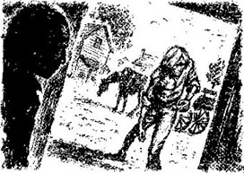
这是我是从哈蒙·高那儿听到的，哈蒙认识斯塔克菲尔德镇上所有的人家。
“大约24年前发生了那场严重的事故后，他就变成那样子了。”哈蒙说，“但弗罗姆家的人都长寿。伊桑可能会活到100岁。”
“可他看起来好像已经死了。”我说。
“我猜他在斯塔克菲尔德熬过太多个冬天了，”哈蒙说，“大部分聪明人都搬走了。”
“那他怎么不搬走？”我问。
“他必须留下来照顾家人——先是他父亲受伤了，之后他母亲又病倒了，再后来就是他妻子。”
“然后他就出了事？”
哈蒙笑了笑。“是的，所以他不得不留下来。”
过去，伊桑·弗罗姆常常在大概每天中午的时候驾着马车从他的农场来邮局，我也是在那时去取信，所以经常看到他。他来邮局就是为了取份报纸，有时候也会取个包裹，那是一家医药公司寄给“齐娜·弗罗姆夫人”的。斯塔克菲尔德镇的人都知道他不想停下来说话，大部分时候他都会慢慢地爬到他的马车上，一言不发地驾车离开。
当时，我被公司派到斯塔克菲尔德附近来做一项工程，住在一位女士家中，大家叫她露丝·黑尔夫人。她婚前名叫露丝·瓦纳姆，如今她的丈夫内德·黑尔已经过世，于是她回到娘家和母亲一起住。房子很大，很气派，漆成白色，屋外长着高大、苍翠的树木。尽管瓦纳姆家显然已不再富裕，但她们的房子却仍是村子里最好的。
露丝·黑尔夫人喜欢和邻居聊天，而我也希望她能多告诉我一些伊桑·弗罗姆的故事。但每当我问她时，她就会显得有些悲伤，并且用低沉的声音对我说：
“是的，他们两个我都认识……太可怕了……”
我问过其他人，斯塔克菲尔德镇上每个人都认为伊桑·弗罗姆一生中遭遇的麻烦事比大多数人都多，但却没人解释为什么他的脸看上去那么悲伤、阴郁。
最后，从好几个人那里，我一点一滴地得知了他的故事。正如通常那样，每次我听到的说法都不一样，但我开始慢慢地把它拼凑了起来。后来不久，见到伊桑·弗罗姆本人时，我对他更感兴趣了。
事情是这样的：每天我都要赶三英里路到火车站，在那儿乘火车去我工作的地方。通常我会从村中一个富裕的店主丹尼斯·伊迪那里租一匹马。但隆冬时节，他的马和斯塔克菲尔德镇上的大多数马都染了病。有那么一两天我根本找不到马匹，这时哈蒙·高想到个主意。
“干吗不让伊桑·弗罗姆驾车送你呢？”他说，“他的马没得病，况且他也需要点儿钱。弗罗姆家的农场和锯木场挣的钱连只猫都养不活。”
伊桑·弗罗姆答应驾车送我，接下来一个星期，我每天都和他并肩坐在他的雪橇上，他那匹瘦马拉着我们，驶过硬邦邦的积雪，直到火车站。然后，在冰冷的晚上，他把我送回斯塔克菲尔德。
不能说他这人不友善，然而在一个小时的路途中，他从不转头看我一眼，也几乎不和我说话。一次，我聊起了佛罗里达州，他告诉我他曾经去过那儿。还有一天早晨，我不小心把一本科学书落在了他的雪橇上，看得出他对那本书挺感兴趣。但大多数时候，弗罗姆赶车时都一声不吭。我开始感到，他就像他身边的土地一样。这个哀伤沉默的人与这白雪覆盖的田地一样冷漠而孤独。他胸中所有的热情与活力都在斯塔克菲尔德冬天的刺骨严寒中封存了起来。
大概过了一个星期，一天晚上天气十分恶劣，我们驾车回家，当晚天气十分恶劣。大雪纷飞不停地下着，一切都笼罩在白茫茫的雪团之中，空气冷得刺骨。驾辕的老马越来越累，我于是跳下车来，在旁边走，却发现走起来很费劲。
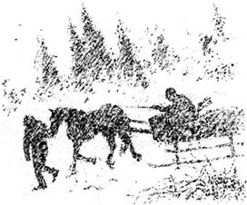
过了一会儿，弗罗姆看了看夜色，对我说：
“我家就在那儿。咱们也受够了这鬼天气。”
我知道他是在请我留宿一晚，于是我们朝着那破败的、孤零零的农舍走去。在我帮他把雪橇收好，把马安顿好后，我们顶着雪来到了农舍前。我跟着他走进屋里，我们右侧的门后传来这时一个女人尖细的声音从我们右侧的门后传来。
弗罗姆打开屋子的门。“请进。”他对我说，他说这话时，那尖细的声音静默了下来。
就是在那夜，我开始了解伊桑·弗罗姆，并将他的故事拼凑了起来……
* * *
2．Coming home from the dance
2
Coming home from the dance
It was a cold, clear night, and the village lay under deep snow. Bright, icy stars shone from a dark sky down on the silent whiteness below.
Young Ethan Frome walked quickly down the empty, moonlit street. He passed Eady's fine new shop and the Varnums' house with its two tall black trees. Below that was the slope of the Corbury road. On clear nights this was often full of young people coasting down, laughing and shouting as they went. But there was not a sound from the icy slope as Ethan passed by. Tonight all Starkfield's life was in a room in the church. Its windows sent yellow light across the snow, and the sound of dance music flowed out into the still midnight air. Ethan hid in the shadows outside the church, and looked in through the nearest window.
The room was hot, bright, and filled with young men and girls. The music had finished, and people were getting ready to leave. Suddenly, a lively young man with thick black hair jumped into the middle of the floor. He went into the crowd and pulled out a young girl. She was dark-haired, and had a bright red scarf around her head. The music started again, and soon the floor was alive with dancing figures.
Outside in the cold, Ethan's heart was beating fast. His eyes followed the girl's red scarf and cloud of brown hair as she danced in faster and faster circles. The young man was Denis Eady, the son of Starkfield's most successful shopkeeper. Denis's own success with the young women of the village was well known. Ethan watched jealously as Mattie, the dark-haired girl, held Eady's hands and smiled at him with her dark, shining eyes.
'How can she look at him like that?' Ethan wondered unhappily. 'Doesn't she realize what he is like?'
Ethan used to walk into Starkfield to fetch home his wife's cousin, Mattie Silver, on the few evenings when some chance of amusement brought her to the village. Mattie had been with the Fromes for a year now. She lived with them in their lonely farmhouse and helped Ethan's wife, Zeena, with the housework. Ethan had liked the warm, smiling girl from the moment that she arrived. She brought hope and life and brightness into his home, like someone lighting a fire in a cold room. But she had more than brightness; Ethan found that she loved the beauty of the natual world around them. Here at his side, living under his roof and eating his bread, was someone who felt the same wonder as he did. He could tell her things and show her things — the bright stars in the clear night sky, birds flying over golden fields, the blue shadows of trees on sunlit snow. And he knew that these things gave Mattie and him the same feelings of deep, silent happiness.
But now those feelings seemed so far away. He watched Mattie's laughing face as she flew round and round the room, and he felt lonely and unhappy. Then he remembered a fear that he had tried to forget. His wife was a cold, silent woman who noticed everything but said very little. Her only real interest was her own ill health. But recently she had started to complain more and more about Mattie's housework, and to say things which worried Ethan.
'I'll need someone to help me when Mattie leaves,' she had said suddenly one morning.
'Oh, Mattie'll never leave us while you need her,' he replied.
His wife lay in bed and watched as he got dressed. 'If a poor girl like her has a chance to marry a smart boy like Denis Eady, I ain't going to stop her,' she said in her flat, whining voice. 'The doctor says I can't manage on my own, so we'll need to hire a girl.'
Life without Mattie! Ethan could not think of it. Her voice, her sweet smile, her gentle arm in his arm during those night walks back to the farm — these were the only things which mattered in his world. Had he been stupid to think that Zeena would not notice his interest in Mattie? He had not thought about it before, but now, as he stood in the darkness outside the church, he remembered other things that Zeena had said, and his fear grew...
The dancers, now in their thick coats and scarves, came out into the cold night air. Ethan heard Mattie's voice in the crowd, and he stepped back into the shadows, suddenly afraid to speak to her. The crowd quickly disappeared, and Mattie stood alone outside the church, looking around her. Then a man's figure appeared.
'Nobody to walk you home, Matt? What a pity! But ain't I lucky that I got my dad's horse and sleigh down here waiting for us? Come on, let's take a ride!'
The girl said nothing, but stood still, watching, while Denis Eady went to untie the horse. In the shadows, Ethan too watched and waited, with his heart beating fast. Mattie held his life in her hands. Eady got into the sleigh and called to Mattie to join him. Then she turned and ran up the slope.
'Goodbye! Have a lovely ride!' she called back.
Eady laughed and followed her up the slope in his sleigh. After a moment he jumped down and tried to put his arm through hers. She stepped quickly out of the way, and Ethan's sudden fear turned to happiness. A moment later he heard the sound of Eady's sleigh going away, and saw Mattie walking alone across the snow.
He caught up with her by the Varnums' trees. She turned round, surprised.
'Oh!' she said. 'I thought maybe you couldn't come.'
'If you thought I couldn't come, why didn't you ride back with Denis Eady?' he answered.
'Oh, how did you know?' she cried. 'Where were you? I never saw you!'
They stood in the dark shadows of the trees, and their laughing voices ran together like water dancing down from the mountains in springtime. He put his arm through hers, but neither of them moved. Ethan wished he could stand there with her all night in the blackness. Mattie took a few steps forward and then stopped, looking down the icy slope of the Corbury road.
'There were lots of people coasting this evening,' she said. 'Ned Hale and Ruth Varnum almost crashed into the big tree down there. It's so dangerous, that tree.'
'You'd be safe with me, Matt,' replied Ethan.
'Would you like to come coasting some night? We could come tomorrow if there's a moon.'
'Oh, yes. How lovely!'
They walked along in silence, but then all Ethan's jealous fears returned.
'I guess it's natural that you're going to leave us,' he said at last.
'Leave? You mean Zeena ain't happy with me? I know I ain't so strong or so smart, but I want to try, I really do.'
'So you don't want to leave us, Matt?'
'Where could I go?' she whispered, almost crying.
Her answer made Ethan sad and happy at the same time. They continued their walk, with the dark, starry sky above them, and the quiet, lonely fields all around. At the entrance to Ethan's farmland they passed by the Frome graves. Ethan had always felt that the gravestones were looking at him and saying 'We never got out of Starkfield. Why should you?' But now he didn't want to escape. All he wanted was to be with Mattie, and some day to lie under that cold ground with Mattie beside him. Ethan was happy now, in his world of dreams. For the first time he put his arm around Mattie. She let it stay there, and they walked up to the farmhouse.
The house was dark and quiet. Zeena always went to bed early. On the nights when they came back late, she used to lock up the house and hide the key outside the kitchen door. Ethan felt for the key under the usual stone.
'Matt, the key's not there!' he said. This had never happened before. They began to look for it in the darkness. Suddenly there was a sound inside the house. They heard a step on the stairs and saw light under the door. Then the door opened, and Ethan saw his wife.
She stood in the dark doorway, a tall thin woman with a blanket round her shoulders. She held a lamp in one hand, and its light threw strange shadows onto her thin lined face. She said nothing, and they stepped into the kitchen. It was deadly cold, like a grave, Ethan shook the snow off his boots.
'I guess you forget us,' he said, looking at Zeena.
'No. I just felt too bad. I couldn't sleep.'
'I'm sorry,' said Mattie. 'Can I do anything to help, Zeena?'
'No, there's nothing you can do.' Zeena turned away from her. 'And why couldn't you shake that snow off outside?' she said to her husband.
They left the kitchen, and the two women went towards the stairs. 'If I go up now, Mattie'll see me go into the bedroom with Zeena,' thought Ethan. 'And I don't want that, not tonight.'
'I think I'll stay down here a bit longer, I've got some paperwork to do,' he said.
'What, now?' said Zeena. 'You'll die of cold.'
Ethan did not answer, but turned back towards the kitchen. Then he saw the look in Mattie's eyes. Was it a look of warning?
'I guess you're right. It is awful cold down here,' he agreed. With his head down, he slowly followed his wife up to their bedroom.
coast v. to ride or move, usually downhill, without use of power （沿山坡）向下滑行
jealously adv. with angry and unhappy feelings because you would like to have something someone else has 嫉妒地
fetch v. to go to where someone is and bring him or her back 去请，接来
amusement n. something that amuses 娱乐，消遣
under sb's roof in someone's home 在某人家里，寄人篱下
remember v. to bring back into your mind what you knew before 回忆起
catch up with sb to reach a person ahead 赶上，追上
return v. to come back again 恢复；重现
whisper v. to speak or say something very quietly, using your breath rather than your voice 低语，耳语
paperwork n. work such as writing letters or reports, which must be done but is not interesting 文书工作
舞会归家路
2．舞会归家路
这是一个寒冷而晴朗的夜晚，厚厚的积雪铺满了整个村子。明朗清亮的星星在黑色的夜空中俯照着这片寂静的白色大地。
月光下，空无一人的街道上，年轻的伊桑·弗罗姆快步走来。他走过伊迪家的新店铺，走过瓦纳姆屋外两棵阴森的大树。那下面就是科贝里路的斜坡，晴朗的夜晚，许多年轻人会在这儿滑斜坡，一边玩儿，一边笑着、叫着。但伊桑经过时，这冰雪覆盖的斜坡却悄然无声。这一晚，斯塔克菲尔德镇的居民都聚在教堂的一个房间内。黄色的灯光透过窗子照在屋外的积雪上，舞曲飘出屋子，在寂静的夜空中飘荡。教堂外，伊桑藏在阴影中，从离他最近的窗子向房间内望去。
屋里气氛热烈，灯火通明，全是小伙子和年轻姑娘。音乐已经结束，人们正准备离开。突然，一个活泼的长着浓密黑发的小伙子跳到屋子中间，从人群中拽出个年轻姑娘。姑娘长着深色头发，头上系着鲜亮的红头巾。音乐又响了起来，不一会儿，屋子里又都是跳舞的人们了。
屋外寒冷的黑夜中，伊桑的心跳得厉害。姑娘转动得越来越快，而他的眼睛一直追随她的红头巾和浓密的褐发。那小伙子叫丹尼斯·伊迪，他父亲是斯塔克菲尔德镇最成功的店主。大家都知道丹尼斯在村里的姑娘中非常有人缘。伊桑嫉妒地看着玛蒂，这个长着深色头发的姑娘，看着她拉着伊迪的双手，还用明亮的深色眼睛笑盈盈地看他。
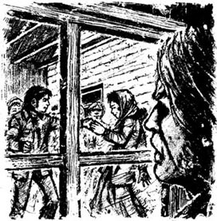
“她怎么能那么看着他？”伊桑很不高兴地想，“难道她不知道他是什么人？”
玛蒂·西尔弗是伊桑妻子的表妹，她偶尔在晚上参加村里的一些娱乐活动，而伊桑都会来接她回家。玛蒂和弗罗姆夫妇在一起住了一年了。她住在他们那孤零零的农舍里，帮助伊桑的妻子齐娜做家务。这个热情的、笑眯眯的女孩儿一到家里，伊桑就喜欢上了她。她为他的家带来了希望、活力和光明，就像在一间冷冰冰的屋子里点燃了一团火。而她带来的不止是光明，伊桑发现她热爱身边的自然界。这个生活在他身边、住在他家里、依赖他生活的女孩儿，同样感受着他所感受着的奇迹。他能向她讲述、展示这些事物——晴朗夜空中明亮的星星、金色田野上飞过的鸟儿、阳光映照的白雪上树木投下的蓝色影子。他知道，这些事物给了他们相同的感受——那些深深的、默然于心的幸福感受。
可现在，那些幸福的感觉似乎如此遥远。望着玛蒂在房间里翩翩起舞时的盈盈笑脸，他感到孤独和不快。他忽然回忆起一丝恐惧，他曾尽力去忘记的恐惧。他的妻子是个冷漠寡言的女人，什么事情都逃不过她的眼睛，只是她很少谈起罢了。她只关心自己的病情。但最近，她开始越来越频繁地抱怨玛蒂的家务做得不好，还说些令伊桑忧虑的话。
一天早晨，她忽然说：“玛蒂走后我需要人帮忙。”
“哦，只要你需要玛蒂，她就不会走。”他回答。
她躺在床上，看着他穿衣服。“要是像她这么个穷姑娘能有机会和丹尼斯·伊迪那样的帅小伙结婚，我一定不会反对。”她拖着平淡尖细的声音说道，“大夫说我自己应付不过来，咱们得雇个女孩儿。”
没有玛蒂的生活！伊桑没法想象。他和玛蒂在夜晚步行回农场时，她的声音、她甜美的笑容、她那挽着他的柔软手臂——只有这些才是他的世界中最重要的东西。难道是自己犯了蠢，认为齐娜没注意到他对玛蒂的关切？他之前从没想过这些，但现在，站在教堂外的夜幕中，他记起了齐娜说的另外一些事，他的恐惧也在增长……
跳舞的人们这会儿穿上了厚厚的外衣，围着头巾，走出了教堂，来到寒冷的夜幕中。伊桑听到玛蒂的声音从人群中传来，他退回到阴影中，突然感到自己害怕和她说话。人们很快散去，玛蒂独自一人站在教堂外，四下张望。这时，一个男人的身影出现了。
“玛蒂，没人陪你回家吗？真糟糕！不过我很幸运呀，我爸爸的马和雪橇在这儿等我们。来，一块儿走吧！”
丹尼斯·伊迪去解马缰绳时，玛蒂没说话，她仍静静地站在那儿望着。阴影中，伊桑也在望着，等着，他的心跳得厉害。玛蒂掌握着他的命运。伊迪上了雪橇，招呼玛蒂一起回家。忽然，玛蒂转身跑上了斜坡。
“再见！一路顺风！”她喊道。
伊迪笑着，驾着雪橇上了斜坡，跟着她。不一会儿，他跳下雪橇，想去搂她。她快步走开，伊桑的忧虑立时化为快乐。不一会儿，他听到伊迪雪橇离去的声音，看到玛蒂一个人在雪地里走着。
他在瓦纳姆家的大树旁赶上了她。她惊讶地转过身。
“哦，”她说，“我以为你可能来不了呢。”
“如果你以为我没来，为什么不和丹尼斯·伊迪一块儿回去呢？”他答道。
“啊，你怎么知道的？”她大叫，“你那时在哪儿？我一直没见到你！”
他们站在大树的黑影里，笑声交织在一起，像从春日的山上欢畅地淌下的水流。他搂着她，他们都没动。伊桑希望整个晚上都能和她一起在这阴影中站着。玛蒂向前走了几步，然后停下来，看着科贝里路旁被冰雪覆盖的斜坡。
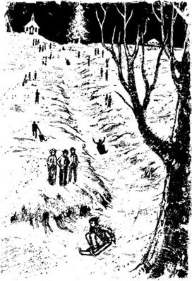
“今晚有很多人在斜坡上滑着玩儿。”她说，“内德·黑尔和露丝·瓦纳姆差点儿就撞上下面那棵大树。那棵树实在太危险了。”
“跟我在一起你会很安全，玛蒂。”伊桑答道，“哪天晚上咱们也来滑着玩儿吧？明晚要是有月亮，咱们就来。”
“啊，好哇。太好了！”
他们默不作声地走着。忽然，唯恐失去玛蒂的恐惧又袭上伊桑心头。
“我想你要离开我们也挺正常的。”他终于说道。
“离开？你的意思是齐娜对我不满意？我知道自己不够强壮，也没那么聪明，可我想努力，真的。”
“那么你不想走喽，玛蒂？”
“我能去哪儿呢？”她低声说道，几乎要哭了。
她的回答让伊桑难过，但同时他又感到欣慰。他们继续走着，头上是群星闪烁的夜空，身边是寂静无人的田野。在伊桑农场的入口处，他们经过了弗罗姆家族的墓地。伊桑曾经总是觉得那些墓碑在盯着他，对他说：“我们从未离开过斯塔克菲尔德。你又怎能离得开？”而现在，他不想逃了。他只想和玛蒂在一起，有那么一天，和玛蒂一起长眠在那片冰冷的土地下。伊桑现在很幸福，在他自己充满梦想的世界里。他第一次搂住玛蒂。她没有拒绝，二人一起向着农舍走去。
农舍没有亮灯，很静。齐娜总是很早上床。当伊桑和玛蒂晚上回来得比较晚时，齐娜就会把门锁上，把钥匙藏在厨房门外。伊桑在平时藏钥匙的石头下摸索着。
“玛蒂，钥匙不在那儿！”他说。这种事从没发生过。他们开始在黑暗中寻找钥匙。忽然，房子里有了动静。他们听见楼梯上响起脚步声，然后看见门底下透出一丝光亮来。门开了，伊桑看见了他的妻子。
她站在黑漆漆的门口，高高瘦瘦的，肩上裹着毯子，一只手拿着灯，灯光在她布满皱纹的瘦削的脸上投下奇怪的阴影。她一言不发。他们走进了厨房。厨房里寒冷刺骨，好似一座坟墓。伊桑抖落靴子上的雪。
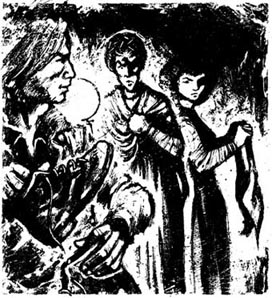
“我猜你把我们忘了吧。”他看着齐娜说道。
“没有。我只是感到很不舒服。我睡不着。”
“真糟糕，”玛蒂说道，“我能帮上忙吗，齐娜？”
“不用，你帮不上忙。”齐娜扭过脸去，不看玛蒂。“你怎么不在外面把雪抖掉？”她对丈夫说道。
三人离开了厨房，两个女人朝楼梯走去。“要是我现在上楼，玛蒂就会看见我和齐娜一起走进卧室。”伊桑想，“我可不想那样，今晚不行。”
“我想在这儿再待会儿。我有些文书工作要做。”他说。
“什么？现在？”齐娜说，“你会被冻死的。”
伊桑没回答，转身朝着厨房。这时他看见了玛蒂的眼色，是在提醒他吗？
“我想你说得对。楼下还是太冷了。”他赞同地说。他低着头，缓缓地跟随妻子走进卧室。
3．A visit to the doctor
3
A visit to the doctor
The next morning was cold and bright. Ethan was down at his saw-mill early because he had to take some wood to the village builder that day. The winter sun burned red in a clear sky, and the sunlight danced over the bright, snowy fields, leaving deep blue shadows under the trees.
Ethan's thoughts were always clearest when he was working in the quiet morning air. Last night, after the bedroom door had closed behind them, Zeena had taken her medicine and gone to bed without a word. Ethan lay next to her, watching the light from under Mattie's door, and thinking. Why had he not kissed her on the walk home? He remembered her soft lips in the moonlight. Now, in the clear morning sunshine, he could still see her face. He could see it in the red sky and in the bright shining snow.
Mattie was the daughter of Orin Silver, a cousin of Zeena Frome's. Silver's medicine company had seemed successful, and he had lived like a rich man. But when he died, his wife and daughter had a terrible surprise. They discovered that he had borrowed thousands of dollars which he could not pay back. This awful news killed Mrs Silver immediately. He had also lost money which belonged to his brothers and sisters, so there was nobody in the family who wanted to help poor Mattie. The twenty-year-old girl was alone in the world, without money and without friends. She was not strong, and she had never studied or learnt to do a job. So Mattie came to Starkfield to work, without pay, in her cousin Zeena's home. At first Zeena often complained about the girl's work. Then, as the months went by, Mattie grew stronger and found the work easier. Zeena had more time to think about her illnesses, and life under the Fromes' roof became more peaceful.
But now, Zeena's strange silent looks, the warning in Mattie's eyes last night... Ethan was sure that something was wrong. By midday the wood was all loaded, ready to take to Andrew Hale the builder. But Ethan decided to go home. If there was going to be trouble, he wanted to be there. So Ethan and Jotham Powell, his hired man, walked through the fields back to the house.
When they entered the kitchen, Mattie was making coffee. Zeena was sitting at the table, wearing her best brown dress and a tall hat. A suitcase stood beside her.
'Where're you going, Zeena?' asked Ethan, surprised.
'My pains are getting really bad. I'm going over to my aunt's in Bettsbridge for the night, and tomorrow I'll see that new doctor,' she answered. 'If you're too busy, I suppose you can let Jotham Powell drive me to the station.'
Ethan said nothing. He was lost in his own thoughts. He realized that, for the first time, he and Mattie would be alone for the night. He looked at Mattie. Was she thinking the same thing? Then he looked at his wife's thin, lined, bloodless face. Zeena was thirty-five, only seven years older than he was, but she was already an old woman.
'Of course Jotham'll take you,' he said at last. 'I can't do it myself, because I've got to get the money for the wood from Andrew Hale.'
This was a lie. Andrew Hale never paid immediately, but Ethan really had no wish to make the long, slow journey to the station with his miserable wife at his side.
Zeena made no reply, and soon afterwards she left with Jotham. Ethan picked up his coat and stood for a moment in the doorway. 'See you later, Matt,' he said.
It was warm and bright in the kitchen. The sun shone in on the flowering pot plants by the window, and the cat sleeping in a chair. Mattie looked up from her housework. 'See you later, Ethan,' she said happily.
All the way down to the village Ethan thought of his return to Mattie that night. Without Zeena, his house seemed more like a home. And as he drove through the snowy fields, this usually silent man began to sing.
* * *
Ethan Frome had not always been so quiet and lonely. As a student he had liked being among happy, friendly, young people. He had enjoyed his science studies and wanted to become an engineer. But after his father's accident and death, Ethan had to leave his studies and return home. Life was hard for him, working alone on the poor farm and unsuccessful saw-mill. Then his mother fell ill, and became more and more silent. Sometimes she used to say a few crazy words, but for most of the time she refused to speak at all. So with each long, cold Starkfield winter, the silence and loneliness round Ethan grew deeper.
As his mother came towards her last illness, Ethan's cousin Zeena arrived to take care of her. It was wonderful to hear another person's voice in the house again, and Zeena was an excellent nurse and housekeeper. Old Mrs Frome finally died on a dark winter's day, and the idea of being alone again filled Ethan with fear. He was grateful to Zeena for all that she had done, and he asked her to stay and marry him. They had at first planned to sell the farm and move to the town. But it was hard to find a buyer, and Ethan soon realized that his wife could not live in a place where she was not someone 'important'. In less than a year her 'sickliness' appeared; then she too fell silent. Her strange, wordless looks worried Ethan. Was she going a little crazy, like his mother? What thoughts and plans were hidden behind her cold eyes?
But that afternoon, as Ethan drove to the village with his sleigh full of wood for the builder, he felt less afraid. Zeena had gone away to Bettsbridge, with all her thoughts on her own health. And tonight he had an evening alone with Mattie. But there was still one worry — the lie about the money from Andrew Hale. He knew that Zeena would want to know where it was.
When Ethan arrived at the builder's, Hale invited him into his office to sit down and get warm. He was a large, red-faced and likeable man, an old friend of Ethan's family. Ethan did not know how to begin, but at last he managed to ask Hale for the first fifty dollars towards this winter's wood. The builder was surprised. He always paid at the end of three months, never before. He refused in his warm, friendly way, and then asked:
'Look, you ain't got money problems, have you?'
'No, not at all,' replied Ethan, very embarrassed.
The afternoon had turned into a cold grey evening by the time Ethan left the builder's. He heard the sound of sleigh-bells, and Denis Eady drove past, shouting 'Hello, Ethe!' Eady was going towards the Frome farm. Did he know that Zeena had gone? Was he going there to spend some time alone with Mattie? Ethan felt wildly jealous, then moments later was ashamed of his feelings.
By the Varnum house Ethan saw two figures standing together under the trees. He heard a kiss, and a surprised 'Oh!' as he passed by. Two happy lovers, kissing where he had stood with Mattie the night before. But unlike him, Ruth Varnum and Ned Hale didn't need to hide their feelings. How lucky they were!
As night fell, Ethan passed by the Frome gravestones and drove up to the farmhouse. A light shone in a room upstairs.
'She's getting herself ready for supper,' he thought.
awful adj. unpleasant or horrible 可怕的，骇人的
suitcase n. a large case with a handle, used for carrying clothes and possessions when you travel （旅行用）手提箱
miserable adj. always unhappy, dissatisfied, or complainig 总是抱怨的
pot plant a plant grown in a flower pot 盆栽植物
engineer n. someone who designs or builds things such as roads, railways, bridges, or machines 工程师
grateful adj. thankful 感激的
likeable adj. pleasant; easy to like 可爱的，讨人喜欢的
embarrassed adj. ashamed, nervous, or uncomfortable in social situation 难堪的
求诊
3．求诊
第二天早晨晴朗而寒冷。伊桑一早就到了他的锯木场，因为这一天他要把一些木材送到村上的建筑商那儿去。晴朗的天空中，冬日的太阳红艳艳的，阳光在白雪皑皑的光灿灿的田野上跳着舞，在树下投射出深蓝色的影子。
在宁静的清晨工作时，伊桑的脑子总是清醒得很。昨晚，关上卧室门后，齐娜服下她的药，一言不发地上了床。伊桑在她身边躺下，看着玛蒂房门下透出的光，思索着。在回家的路上他干吗不亲她呢？他记起月光下她柔软的嘴唇。现在，在这明亮的清晨阳光下，他依然看得见她的面庞，在那阳光映红了的天空中，在那莹莹的白雪上。
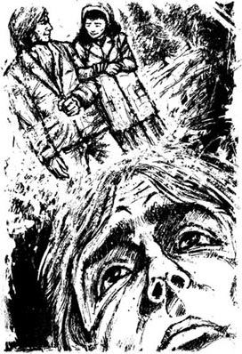
玛蒂是奥林·西尔弗的女儿，齐娜·弗罗姆的表妹。西尔弗的医药公司似乎曾生意兴隆，他活得跟个有钱人似的。可他死后，他的妻女却大吃一惊。她们发现，他借了上千美元，根本无法还清。这个坏消息立时要了西尔弗夫人的命。西尔弗先生甚至花掉了他兄弟姐妹的钱，因此，他的家族中没人愿意帮助可怜的玛蒂。这个20岁的女孩儿孤身一人，既没钱也没朋友。她不壮实，也从没上过学或是去学着做过什么工作。因此她来到斯塔克菲尔德的齐娜表姐家干活，没有报酬。最初齐娜经常抱怨玛蒂做活差。几个月过后，玛蒂长得壮实些了，感觉家务变得容易些了。齐娜有了更多的时间去琢磨她的病情，于是弗罗姆家的生活变得安宁多了。
可现在，齐娜奇怪的沉默表情，昨夜玛蒂警告的眼色……伊桑确信一定是出了什么问题了。中午之前，木材已经全装好了，要送到建筑商安德鲁·黑尔那里去。可伊桑决定回家，要是家里有什么麻烦，他想在那里。于是伊桑和他雇的帮手乔撒姆·鲍威尔穿过田野往家走去。
他们进厨房时，玛蒂正在煮咖啡。齐娜坐在桌子前，穿着她最好的褐色衣服，戴着高高的帽子，身旁放着个手提箱。
“你要去哪儿，齐娜？”伊桑惊讶地问道。
“我的病痛正变得越来越厉害。我要去贝茨布里奇我姑妈家，在那儿过夜，明天我要去看一个新医生。”她答道，“你要是太忙，我想你可以让乔撒姆·鲍威尔送我到车站去。”
伊桑没回答。他陷入了思考。他发现，他和玛蒂将第一次单独过一夜了。他看着玛蒂。她也有相同的想法吗？然后他看着妻子瘦削的、布满皱纹的、没血色的脸。齐娜35岁，只比他大7岁，可她已经是个老女人了。
“乔撒姆当然能送你去了。”他终于说道，“我没法儿亲自送你去了，我得到安德鲁·黑尔那儿拿木材钱。”
这是谎话。安德鲁·黑尔从不马上付钱，可伊桑实在不想让满口抱怨的妻子坐在他身边，一起去度过到车站的这段漫长而缓慢的旅程。
齐娜没回答，不久就和乔撒姆一块儿离开了。伊桑拿起了外套，在门口站了一会儿。“再见，玛蒂。”他说。
厨房里温暖又明亮。阳光照在窗边正在开花的盆栽上，猫儿在椅子上睡觉。玛蒂停下手中的家务活儿，抬起头来。“再见，伊桑。”她欢快地说。
去村里的路上，伊桑都在想着晚上回家去见玛蒂。齐娜不在，他的房子会更像个家。当他驶过白雪覆盖的田野时，这个通常沉默寡言的人唱起了歌。
* * *
伊桑·弗罗姆并非一向这么沉默孤独。当学生时，他喜欢和快乐友好的年轻人在一起。他喜欢自然学科，想成为一名工程师。可父亲出事死后，他就不得不辍学回家了。对他来说，独自一人在破旧的农场和不景气的锯木场工作，生活很艰难。之后，他母亲病倒了，变得越来越沉默。有时她会说些疯言疯语，可大多数时候她根本不说话。于是，伴随着一个又一个漫长寒冷的冬季，伊桑周遭的沉寂与孤独变得越来越深了。
母亲病危之际，伊桑的表姐齐娜赶来照顾她了。能在家中再听到另外一个人的声音真是太好了，齐娜又是个非常称职的护士和管家。老弗罗姆夫人终于在一个阴晦的冬日去世了，一想到又要独自一人，伊桑心中就充满了恐惧。他十分感激齐娜所做的一切，并请求她留下来嫁给他。一开始他们计划着卖掉农场，搬到镇上去住。可找不到买主，而且伊桑很快就意识到他妻子不能住在一个她不是什么“重要”人物的地方。不到一年她就出现了“病情”，随后也沉默了起来。她奇怪的无言表情让伊桑感到忧虑：她会变得疯疯癫癫的，就像他母亲一样吗？她那双冷酷的眼睛背后隐藏着什么想法和计划？
可是那个下午，当伊桑驾着满载木材的雪橇去村上的建筑商那儿的时候，他不那么害怕了。齐娜去贝茨布里奇了，脑子里想的全是她自己的健康问题。而今夜，他将和玛蒂共处一晚。可还有一个让人烦心的事儿——他撒谎要从安德鲁·黑尔那儿拿钱。他知道齐娜会问钱在哪儿。
伊桑到了建筑商那儿后，黑尔请他到办公室坐坐，暖暖身子。黑尔是个大块头，红脸膛，人缘不错，是伊桑家的老朋友。伊桑不知道怎么开口，可最终他还是想法子跟黑尔要这个冬天所卖木材的第一笔50元钱。建筑商感到很意外，他总是在三个月结束时付款，从不提前。他温和而友善地拒绝了伊桑，并问：
“瞧，你在钱上不会有什么问题吧，是不是？”
“没，一点儿问题也没有。”伊桑很尴尬地答道。
伊桑离开建筑商那儿的时候，已经是阴冷的傍晚了。他听到了雪橇的铃铛声，丹尼斯·伊迪驾着雪橇驶过，喊着：“你好哇，伊桑！”伊迪向着弗罗姆的农场驶去。他知道齐娜走了？他是要去那儿和玛蒂单独待会儿吗？伊桑感到一阵强烈的嫉妒，可过了不久他又为自己的嫉妒感到羞愧。
驶过瓦纳姆家的时候，伊桑看到在树下有两个人站在一起。经过时他听到一声亲吻，还有人惊讶地“哦”了一声。一对幸福的恋人在他和玛蒂前一天夜里曾经站过的地方亲吻着。与自己不同，露丝·瓦纳姆和内德·黑尔无需隐藏他们的感情。他们多么幸运啊！
夜幕降临，伊桑驶过自家的墓地，来到了农舍前。楼上的一间屋子里亮着灯。
“她正在准备晚饭。”他想。
4．An evening together
4
An evening together
Ethan went up to the kitchen door, and found that it was locked. He called 'Hello, Matt!', but there was no answer. He stood in the darkness and waited. After a moment he heard a sound on the stairs, and saw light round the door. And just like the night before, the door opened and there stood a woman with a lamp in her hand. The lamplight shone on the milky whiteness of Mattie's young skin, on her soft lips and shining dark eyes. She smiled gently, and stepped to the side to let Ethan come in.
The kitchen was warm and welcoming. On the table were cakes and fruit in a bright red glass dish, and the cat was lying lazily in front of a warm fire.
'Well, Matt, any visitors?' asked Ethan.
'Just one,' replied Mattie, laughing. A black cloud came down over Ethan's world.
'Who was that?'
She looked at him and laughed again, 'Jotham Powell. He came in and asked for a drop of coffee.'
The blackness lifted and Ethan's world grew bright again. 'Well, I hope you gave him some,' he said, then added, 'I suppose Zeena got to the station in time?'
Zeena's name brought an immediate coolness into the kitchen. After a few moments Mattie said: 'I guess it's about time for supper,' and they sat down.
But they still felt uncomfortable — Zeena seemed to be in the room with them, with her cold eyes and strange looks. They ate in embarrassed silence, then began to talk about the weather.
As they were speaking, the cat climbed quietly onto the table and started to move towards the milk-jug. When they saw it, they both reached forwards at once, their hands meeting on the jug. Ethan kept his hand on Mattie's a few seconds longer than was necessary. At that moment the cat suddenly jumped backwards and knocked into the red glass dish. The dish fell to the floor with a crash.
'Oh, Ethan,' Mattie cried, 'It's all in pieces! What will Zeena say? It was her very best dish!'
'Don't worry. I'll get another one.'
'You'll never find one! It was a wedding present from her aunt in Philadelphia. That's why she never uses it. I had to climb up to get it from the top of her cupboard! Oh, Ethan, what shall I do?'
She began to cry, and her tears seemed to burn into Ethan's heart.
'Oh, Matt, don't cry! Please don't cry!' he said softly.
They looked at the bits of red glass lying like the broken pieces of their evening. Ethan picked them up and walked out of the kitchen to the hall. Reaching up his long arm, he put the broken pieces at the top of the cupboard and arranged them carefully. From below nobody could see that the dish was. broken.
'I'll get some glue to mend it tomorrow,' thought Ethan. 'Zeena won't look at it for months, and I'm sure I'll find another one somewhere.'
He went back to the kitchen. 'It's all right, Matt,' he said. 'Let's finish supper.'
After the meal Mattie cleared the table and Ethan went out to see the cows. The world was dark and still outside. When he came back, Mattie had pushed his chair near the fire and had seated herself by the lamp with a bit of sewing. He sat down, feeling warm and dreamy and at peace with the world. The only trouble was that he could not see Mattie from where he sat. But he felt too lazy to move and after a moment he said: 'Come over here and sit by the fire.'
Mattie got up and sat opposite him in Zeena's rocking chair. He looked at the chair and for a moment he saw his wife's grim face there. Mattie seemed to feel uncomfortable too. After a while she got up, saying, 'I can't see to sew,' and went back to sit by the lamp.
The cat jumped into the empty rocking-chair, and Ethan moved his own chair a little. Now he could see Mattie as she sat and sewed in the soft lamplight. A deep quiet came over the kitchen. The 'tick-tick' of the clock was the only sound in the room, and the smoke from Ethan's pipe and the smell of Mattie's flowering plants filled the air.
They began to talk easily of everyday things. It all seemed so comfortable and so peaceful. Ethan began to dream that they always spent their evenings like this...
'This was the night when we were going coasting,' he said after a while.
She smiled back at him. 'I guess you forgot!'
'No, I didn't forget. It's too dark tonight, but we can go tomorrow if there's a moon.'
'That would be lovely. Ethan!' Mattie laughed happily, and her eyes shone in the lamplight. Ethan loved the way that her face changed as she talked, like a field of grass moving under a gentle summer wind.
'It's too dangerous on a dark night like this,' he went on. 'You've got to keep your eyes open on that slope, you know, Matt. That's a dangerous corner down by that big tree. You could crash right into it if you're not careful.' Then he added: 'I guess we're fine here, aren't we?'
'Yes, we're fine here,' agreed Mattie in a soft, sweet voice. Ethan put down his pipe and pulled his chair up to the table. He touched the end of her piece of sewing.
'Say, Matt, guess what I saw tonight? Your friends kissing under the Varnum trees.'
Mattie's face turned bright red. 'That'll be Ruth and Ned,' she answered, looking down at her sewing. Ethan felt embarrassed too. Last night on their walk home he had put his arm around Mattie, and had wanted to kiss her. But tonight, in the warm lamplit room, she seemed so much further away.
'I guess they'll get married soon,' said Ethan. 'And then maybe you'll be next.'
'Why do you say that?' she replied in a low voice. 'Is it because Zeena doesn't want me to stay?'
'What do you mean?' asked Ethan, afraid again.
'I thought that last night she seemed... Oh, I don't know. Nobody knows what Zeena thinks. She hasn't said anything to you, has she?'
He shook his head. 'No, not a word.'
'I guess it was nothing then. Let's not think about it,' said Mattie, and went on with her sewing.
Ethan watched her in silence. Then he gently took hold of the other end of her piece of sewing. Mattie's warmth seemed to flow along it towards him. Could she feel the answering warmth from his own hand? They sat like this for a few moments, then Ethan heard a sound behind him. The cat had jumped down from Zeena's chair, and because of the sudden movement the empty chair had started a ghostly rocking.
'Zeena'll be in that chair herself this time tomorrow,' thought Ethan. 'I've been in a dream, and this is the only evening we'll ever have together...' The return to the real world filled him with pain, and he suddenly felt very tired.
Mattie looked at him, and for a moment he saw fear cross her face. He held onto her sewing and kissed the end of it softly. She pulled it slowly from his lips and put it away. It was eleven o'clock.
'Is the fire all right?' she asked in a low voice.
They checked the fire, moved the plant pots away from the cold window, and put out the lamp.
'Goodnight, Matt,' he said, as she put her foot on the first step of the stairs.
'Goodnight, Ethan,' she answered, and went up.
When the door of her room had closed, he remembered that he had not even touched her hand.
welcoming adj.(of a place) making one feel happy and relaxed to be in （地方）令人愉悦的
crash n. a loud noise like the sound of two hard things hitting each other and breaking 撞击声
cupboard n. a piece of furniture with doors, and sometimes shelves, used for storing clothes, plates, food, etc. 橱柜
arrange v. to put a group of things in a particular order 整理
mend v. to repair 修补
touch v. to put your hand or pan of your body on someone or something 触摸，碰到
ghostly adj. reminding you of a ghost 鬼的，幽灵的
check v. to examine something in order to find out whether it is how it should be 检查
共度一夜
4．共度一夜
伊桑走到厨房门前，发现门锁着。他喊道：“嗨，玛蒂！”没人应声。他站在黑暗中等着。过了一会儿，他听到楼梯上传来声音，然后看到门的四周透出光亮来。就像昨晚一样，门开了，一个女人站在门口，手里拿着一盏灯。灯光映着玛蒂牛奶般白皙的年轻肌肤，映着她柔软的嘴唇，还有那双亮闪闪的黑眼睛。她温柔地笑着，让到了一边，让伊桑进去。
厨房温暖而舒适。桌上有个亮红色玻璃盘子，里面摆着蛋糕和水果，猫慵懒地卧在温暖的炉火前。
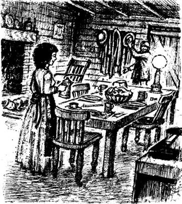
“哎，玛蒂，有客人来过？”伊桑问道。
“只有一个。”玛蒂笑着答道。一阵阴云笼罩上伊桑的世界。
“是谁？”
她看着他，又笑了：“乔撒姆·鲍威尔。他进来要杯咖啡喝。”
阴云散去，伊桑的世界又见晴朗。“嗯，我想你给了他一些吧。”他说，然后又补充道，“我想齐娜及时赶到车站了吧。”
齐娜这个名字霎时给厨房内带来一丝寒冷。过了一会儿，玛蒂说：“我想该是吃晚饭的时候了。”他们于是坐了下来。
可他们还是觉得不舒服——好像齐娜还在屋子里，和他们在一起，睁着她那双冷酷的眼睛，带着她那种奇怪的表情。他们尴尬地默默用餐，接着聊起了天气。
聊天的时候，猫悄悄地爬上了桌子，向着牛奶罐子走去。看到猫，两个人都立刻伸出手来，两只手在牛奶罐子上碰在了一起。伊桑把手在玛蒂的手上多放了几秒钟。就在这会儿，猫突然向后跳去，撞上了红色的玻璃盘子，盘子“哗啦”一声掉在了地板上。
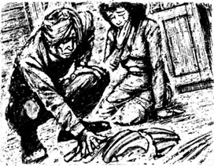
“啊，伊桑，”玛蒂大叫，“盘子碎了！齐娜会怎么说啊？那是她最好的盘子啊！”
“别急，我再买一个。”
“你根本找不着的！那是她费城的姨妈送她的结婚礼物，所以她从来都没用过。我是爬上去从她橱柜最上面一层拿下来的！哦，伊桑，我该怎么办？”
她哭了起来，眼泪好像灼烧着伊桑的心。
“哦，玛蒂，别哭！别哭！”他轻声劝道。
他们看着红色玻璃碎片，就像看着他们共度的这个夜晚碎成一片片一样。伊桑把碎片捡起来，走出厨房，来到门厅，伸着长长的胳膊，将碎片放在了橱柜顶层，仔细地归整好。从橱柜下看去，没人看得出盘子碎了。
“我明天去拿些胶水把它粘好。”伊桑想着，“齐娜几个月内不会看它，我相信能从什么地方再找一个来。”
他走回厨房。“没事了，玛蒂。”他说，“咱们继续吃饭吧。”
吃完饭，玛蒂收拾桌子，伊桑出去查看牲口。屋外的世界黑黢黢的，悄无声息。他回来时，玛蒂已将他的椅子推到了炉火边，自己坐在灯边做着针线活儿。他坐了下来，感觉暖洋洋的，恍如在梦境中，世界一片祥和。唯一的不足就是从他坐着的地方看不到玛蒂。可他感到懒懒的，不想动弹，于是过了一会儿他说：“过来坐在炉火边吧。”
玛蒂起身坐在了他对面齐娜的摇椅上。他看着那摇椅，一时间又好像看到了妻子那阴郁的脸。玛蒂看上去也不太自在。不一会儿，她站起身来，说：“我看不清，没法儿缝。”就坐回到灯旁边去了。
猫跳到了空摇椅上，伊桑把自己的椅子挪了挪。现在他能看到玛蒂了，她坐在柔和的灯光下做着针线活儿。深深的寂静笼罩了厨房，房间里只有“滴答滴答”的钟声，伊桑的烟斗冒出的烟和玛蒂养的鲜花所散发出来的香气弥漫在空气中。
他们扯起了家常。一切看似如此舒畅，如此祥和。伊桑开始梦想他们会一直这样度过所有的夜晚……
“今晚我们本来要去玩滑斜坡的。”过了一会儿他说。
她笑着回答：“我以为你忘了呢！”
“不，我可没忘。今晚太黑了，明天要是有月亮，我们就去。”
“那太好了，伊桑！”玛蒂开心地大笑，眼睛在灯光下放出光彩。伊桑喜欢她聊天时表情的变化，仿佛柔和的夏风吹拂着的草地。
“像今天这么黑的夜晚去那儿太危险了。”他继续说道，“你知道，在斜坡上你必须睁大眼睛，玛蒂。坡下大树旁有个危险的拐角，要是不小心就会撞个正着。”然后他又补充了一句：“我想咱们在这儿挺不错的，是不？”
“是啊，在这儿不错。”玛蒂甜甜地轻声表示同意。伊桑放下烟斗，把椅子拽到桌子前，他碰了碰玛蒂活计的一角。
“嘿，玛蒂，猜我今晚看见了什么。你的朋友在瓦纳姆家的大树下接吻。”
玛蒂的脸变得红彤彤的。“是露丝和内德。”她答道，低下眼帘看着自己的针线活儿。伊桑也感到一阵尴尬。昨晚他们走回家时他曾搂住玛蒂，还想亲她来着。而今晚，在这被灯光照亮的温暖房间里，她又这般遥远。
“我想他们就快结婚了。”伊桑说，“说不定下一个就是你。”
“为什么这么说？”她低声答道，“是因为齐娜不想让我待在这儿吗？”
“什么意思？”伊桑问道，又是一阵恐惧。
“我想昨晚她看上去……哦，我不知道。没人知道齐娜的想法。她没跟你说什么，是吗？”
他摇了摇头。“没有，一个字也没说。”
“我猜那就没什么事，别去想它了。”玛蒂说着，又缝了起来。
伊桑静静地看着她，然后轻轻地抓住了她针线活计的另一角。玛蒂的温暖好像通过它流向了伊桑。她能感觉到他的手传递回去的温暖吗？他们这样坐了一阵子，忽然伊桑听到背后一声响动。猫跳下了齐娜的摇椅，这个突然的动作让空摇椅幽灵般地摇晃起来。
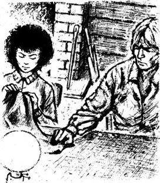
“明天这个时候，齐娜就会坐在那把椅子上了。”伊桑想，“我就像做了一场梦，今晚是我们唯一共同度过的夜晚了……”回到现实让他充满痛苦，忽然间他感到十分疲惫。
玛蒂看着他，一时间他看到她脸上掠过惊恐的神色。他拉起她的针线活儿，轻轻地亲着一角。她慢慢地将它从他唇边抽出来，放到一边。已经11点了。
“炉火还好吧？”她低声问道。
他们看了看炉火，把花盆从寒冷的窗子旁搬开，熄了灯。
“晚安，玛蒂。”玛蒂走上第一级楼梯时，伊桑说道。
“晚安，伊桑。”她答道，然后上楼去了。
当她房间的门关上的时候，他想起自己甚至连她的手都没碰一下。
5．Zeena's news
5
Zeena's news
The next morning Jotham Powell came round early to help load some more wood. Ethan could still feel inside him the sweetness of the evening before, and he tried hard not to show his happiness.
He did not know why he felt so happy. There was no reason for it, because nothing had changed in his life or in Mattie's. But their evening together had given him a dream — a picture of life with Mattie at his side.
He wanted to load the wood quickly and then drive it down to Starkfield, where he could buy the glue to mend the broken dish. He was sending Jotham to fetch Zeena from the station after dinner, so they needed to work fast. But the morning went badly. A wet snow had fallen in the night, and the roads were like glass. One of his horses fell and cut its leg. Icy rain started to fall, making the loading slow and difficult. It was after midday when they finished.
Immediately after dinner, Ethan put his coat on again. Jotham was drying his wet feet by the fire and Mattie was washing the dishes.
'I'll be back early,' Ethan said to Mattie in a low voice. He was afraid to say more in front of Jotham, but he thought that Mattie understood him.
The journey down to the village was long and slow, with his two old horses pulling their heavy load over the snow and ice underfoot. By the time he had unloaded the wood and managed to buy the glue, it was already late afternoon. On the way back the rain began again, turning to ice as it fell on the snow and making the road even more glassy and dangerous. Once or twice Ethan heard sleigh-bells and turned round, afraid that Jotham and Zeena were coming up behind him. But for most of the journey he just looked grimly into the falling rain, as his tired horses made their way up the hill.
At last he arrived home and hurried into the kitchen. Mattie was alone.
'Look, Matt,' he cried, 'I've got the glue to mend the dish with! Quick, let me get it!'
'Oh, Ethan — Zeena's back!' she said in a whisper, holding onto his arm.
Ethan looked round the kitchen, which looked cold and unwelcoming in the wintry evening light.
'How is she?' he asked, in the same low whisper.
'I don't know. She didn't say anything, she just went straight upstairs.'
Ethan put the glue back in his pocket. 'Don't worry. I'll come down and mend the dish in the night,' he said.
Then, just as she had done the evening before, Mattie said: 'I guess it's about time for supper.'
Ethan called Zeena, but there was no answer. He went up to the bedroom, and pushed open the door. In the darkness he saw Zeena's figure sitting by the window, still wearing her travelling dress.
'Well, Zeena, supper's ready. Ain't you coming?'
'I don't think I could eat a thing,' she replied, then turned her head towards him. 'I'm much sicker than you think.'
'I hope that's not so, Zeena.'
'The doctor says I mustn't do anything at all in the house. So we'll have to get a hired girl.'
'A hired girl?'
'Yes. My aunt's found me one already. She's coming tomorrow afternoon.'
'Why didn't you tell me what you planned to do?' he asked angrily. 'Where do you think I'll get the money to pay her?'
'How did I know what the doctor would say? I'm ashamed to have a husband like you, Ethan Frome. I lost my health taking care of your own mother! Marrying me was the least that you could do after —'
'Zeena!'
The darkness between them was filled with anger. It was their first moment of open fighting in their sad seven years together. Ethan felt ashamed, and tried to speak more calmly.
'You know I don't have the money, Zeena. She'll have to go back.'
'What about that fifty dollars from Andrew Hale?'
He remembered the lie he had told the day before.
'I guess that was a mistake.'
'You mean you ain't going to get it?'
'No. I'm sorry, Zeena. You're a poor man's wife. But I'll do the best I can to help you.'
'Oh, I guess we'll manage,' she said more gently. 'And without Mattie's food to pay for —'
'Without Mattie's —?' he began.
Zeena laughed. It was a strange sound. He couldn't remember hearing her laugh before.
'You didn't think Mattie was staying, did you?'
'But you can't send her away — she's your cousin.'
'Well, we can't keep two girls here.'
Ethan could not believe what he was hearing.
'Ethan — Zeena! Supper's ready!' Mattie called brightly from downstairs.
Ethan felt angry and helpless. 'But where will she go? A poor girl with no friends or money...'
'She's been here long enough. We've kept her for over a year now, and it's time for her to go.'
Ethan looked at his wife with eyes full of hate. It was an angry, bitter hate. It was a hate which had grown during years of hard work, hopeless poverty, and broken dreams. This woman had destroyed all his hopes. She had taken everything from him, and now wanted to take the one beautiful thing left in his life. He made a sudden, violent movement towards her, then stopped.
'I don't think I'll come down,' said Zeena calmly. 'I guess I'll just lie on the bed a while.'
Ethan went downstairs to the kitchen, and Mattie gave him a plate of food. He took a mouthful, then pushed the plate away.
'What's the matter, Ethan? Doesn't it taste right?'
'It's fine, Matt. Only I —' He stood up quickly.
She looked at him with frightened eyes. 'I knew there was something wrong. What is it, Ethan? What is it?'
He took her in his arms and found her lips at last. He kissed and kissed her. He was lost in the sweetness of her lips. Then she pulled away from him, her face white with fear, and he cried out:
'You can't go, Matt! I'll never let you go!'
'Go... go?' she whispered. 'Must I go? Ethan, what has happened? Is Zeena angry with me?'
He told her what the doctor had said. Mattie looked so small and helpless. His heart ached for her, and he wanted to hold her in his arms again. They were silent for a long while, then Mattie said in a low voice:
'Don't be too sorry, Ethan.'
'Oh, Matt — Matt — where'll you go?'
'Maybe I'll get something to do in town.' But they both knew that she had little chance of finding a job. There were too many people looking for work in the towns, and there were no jobs that Mattie could do. And Ethan knew what happened to girls who had no job, no money, and no friends... He sat down in despair, and hid his face in his hands.
Then they heard Zeena's footsteps on the stairs. She came down wearing her usual dress. Then she sat down in her usual seat, and took a large plateful of food. She ate well, and talked in an everyday way about the illnesses of her friends and family in Bettsbridge. As she spoke, she looked at Mattie with a small smile on her thin lips. When supper was finished, she stood up and said:
'That meal's given me a stomach-ache. I think I'll go and look for the stomach medicine that I bought last year.'
She left the room. Ethan's and Mattie's eyes met, full of silent despair. The kitchen looked as warm and peaceful as the night before, but now everything had changed. Then suddenly Zeena was back, her face burning with anger. In her hands she held the broken pieces of the red glass dish.
'I want to know who did this,' she said in a shaking voice.
'I can tell you. It was the cat,' answered Ethan after a few moments.
'The cat? How did the cat get into my hall cupboard?'
'Oh, Zeena, it was my fault, not Ethan's!' cried Mattie. 'I got it down from your cupboard. I — I wanted the supper table to look pretty.'
'You wanted the supper table to look pretty! So you took my very best dish, the one that I never, ever use. Not for visitors, not for anyone. You're a bad girl, Mattie Silver, just like your father. I always knew you were bad — that's why I hid my things from you. And now you've taken the thing that I cared for the most —' Tears ran down her thin, yellowish face. Then she left the room, carrying the pieces of broken glass like a dead body.
cut v. to injure a part of your body with something sharp that cuts the skin 割破，划破
glassy adj. smooth and shing like glass 平滑如镜的
destroy v. to damage something so severely that it no longer exists or can never return to its normal state 毁灭，破坏
mouthful n. an amount of food or drink that you put in your mouth at one time （食物或饮料的）一口
despair n. the complete loss or absence of hope 绝望
齐娜的消息
5．齐娜的消息
第二天，乔撒姆·鲍威尔早早就来帮着把木材装车。伊桑仍能感到内心留存着昨晚的甜蜜，他努力不表现出自己的幸福感觉。
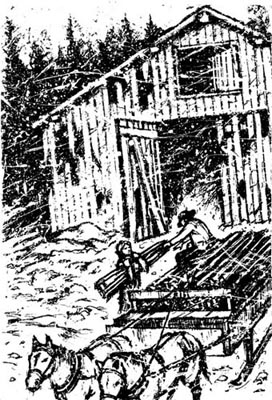
他不知自己为何感到如此幸福。没什么理由，因为他的生活不曾有什么改变，玛蒂的生活也没有。可他们共度的那个夜晚给了他一个梦想——一幅玛蒂相伴自己生活的画面。
他想快点儿把木材装好，然后驾车去斯塔克菲尔德镇，在那儿他能买到胶水把碎盘子粘起来。他让乔撒姆饭后去车站接齐娜，所以他们得快点儿干活。可上午的天气糟透了。夜里的雨夹雪让路面变得像玻璃一样滑。他的一匹马摔倒了，划伤了腿。天又下起了冰冷的雨，使装车进行得缓慢而困难。他们装完木材时已经过了中午。
一吃完饭，伊桑就又穿上外衣。乔撒姆正在炉火边烘烤他的湿脚，玛蒂在洗盘子。
“我会早点儿回来。”伊桑低声对玛蒂说。在乔撒姆面前他不敢多说什么，他想玛蒂能明白自己的意思。
去村上的路走得又长又慢，两匹老马拖着沉重的木材在冰雪上前行。等他卸完了木材，买到胶水，已经到了黄昏时分。回家的路上又下起了雨，雨点落在雪上变成冰，路变得更滑、更危险了。有一两次伊桑听到雪橇铃声，回头张望，他害怕乔撒姆和齐娜从背后赶上来。可大多数时候，当疲惫的马蹒跚上山时，他只是阴郁地看着下着的雨。
他终于到了家，快步走进厨房。玛蒂独自一人在那儿。
“瞧，玛蒂，”他大声说道，“我买到粘盘子的胶水啦！快，给我盘子！”
“哦，伊桑——齐娜已经回来了！”她抓住他的胳膊低声说道。
伊桑环顾厨房，在冬日夜晚的灯光下，厨房看上去冰冰冷冷，让人不舒服。
“她怎么样？”他用同样低的声音问道。
“不知道。她什么都没说，直接上楼了。”
伊桑把胶水放回衣袋。“别担心，我夜里下来把盘子粘上。”他说。
接下来，玛蒂就像前一夜一样，说道：“我想该是吃晚饭的时候了。”
伊桑叫齐娜，可她没回答。他上楼来到卧室前，推开门。黑暗中，他看见齐娜的身影坐在窗边，仍穿着外出时的衣裳。
“嘿，齐娜，晚饭好了。不来吗？”
“我想我吃不下什么了。”她答道，转头向着他，“我的病比你想的严重。”
“真希望不是那样，齐娜。”
“医生说我根本不能干家务了。咱们得雇个女孩儿。”
“雇个女孩儿？”
“对，我姑妈已经给我找了一个。明天下午就来。”
“你怎么不告诉我你的计划？”他愤怒地问道，“你想想我哪儿有钱雇她？”
“我怎么知道医生会说什么？有你这样的丈夫，我真感到羞耻，伊桑·弗罗姆。为了照顾你母亲，我搭上了自己的健康！娶我是你最起码该做的事情——”
“齐娜！”
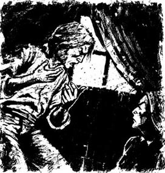
愤怒的气息充斥于他们之间黑暗的空间。七年的悲哀生活中，这是他们第一次公开的争吵。伊桑感到羞耻，他尽力冷静地说道：
“你知道我没钱，齐娜。她必须回去。”
“你从安德鲁·黑尔那儿拿到的50美元呢？”
他记起前一天对她撒的谎。
“我想是弄错了。”
“你是说你拿不到钱了？”
“对。对不起，齐娜。你是个穷人的老婆。但我会尽力帮你的。”
“哦，我想我们会有办法的，”她温和了些，说道：“而如果不用付玛蒂的伙食——”
“没有玛蒂——？”他问。
齐娜笑了，笑声很奇怪。他记不起曾听她笑过。
“你不会以为玛蒂要留下来吧，是吗？”
“可你不能打发她走——她是你表妹。”
“哦，咱们可养不起两个丫头。”
伊桑简直不敢相信自己听到的。
“伊桑——齐娜！晚饭好了！”玛蒂在楼下清脆地喊道。
伊桑感到愤怒、无助。“可她能去哪儿呢？一个没有朋友又没钱的女孩儿……”
“她在这儿待得够长了。我们养了她一年多，她该走了。”
伊桑看着妻子，眼里充满怨恨。那是愤怒的、憎恶的怨恨；是多年来在艰辛的劳作、绝望的贫穷和破碎的梦想中积生的怨恨。这个女人毁了他所有的希望，夺走了他的全部，现在又想夺走他生命中留下的唯一一件美丽的事物。他忽然狂暴地向她走去，又停了下来。
“我不想下楼了。”齐娜平静地说，“我想在床上躺会儿。”
伊桑下楼来到厨房，玛蒂递给他一盘食物。他吃了一口，就把盘子推到一边。
“怎么了，伊桑？不好吃吗？”
“没事儿，玛蒂。我只是——”伊桑一下子站了起来。
玛蒂惊恐地看着他。“我知道出事了。怎么了，伊桑？怎么了？”
他将她揽入怀中，寻觅到她的双唇，反复亲吻着她，沉醉于她双唇的甜蜜中。玛蒂抽身离开伊桑，面色因惊惧而变得苍白。伊桑大喊：
“你不能走，玛蒂！我决不让你走！”
“走……走？”她低声念叨，“我必须走吗？伊桑，怎么啦？齐娜生我气了吗？”
伊桑告诉了她医生的话。玛蒂看上去如此弱小无助。他心疼她，想再次把她搂进怀里。他们沉默了很久，然后玛蒂低低地说道：
“别太难过，伊桑。”
“哦，玛蒂——玛蒂——你能去哪儿呢？”
“或许我能在城里找点儿活儿干。”但他们都知道，她找不到什么工作。城里有太多的人在找工作，没什么玛蒂能干的活儿。伊桑知道，一个女孩儿如果没工作、没钱、没朋友，那会发生什么……他绝望地坐下，用双手捂住脸。
这时，他们听到楼梯上传来齐娜的脚步声。她穿着家常的衣服下来了，在平时坐的椅子上坐下，拿了一大盘食物。她吃得很香，还扯起了家常，谈到贝茨布里奇亲友们的病情。说话时，她看着玛蒂，薄薄的嘴唇上挂着一丝浅笑。吃完饭，她站起身说道：
“这饭吃得我胃痛。我得去找点儿去年买的胃药。”
她离开了厨房。伊桑和玛蒂目光相遇，充满了无声的绝望。厨房像昨夜一样温暖安详，可现在，一切都变了。这时齐娜突然折了回来，满脸怒气，她手里拿着红色玻璃盘子的碎片。
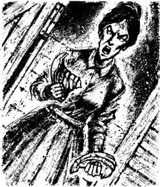
“我想知道这是谁干的。”她的声音在颤抖。
“告诉你吧，是猫干的。”过了一会儿，伊桑答道。
“猫？猫怎么能爬到门厅的橱柜里去？”
“哦，齐娜，是我的错，跟伊桑没关系！”玛蒂哭道，“我把盘子从你的橱柜里拿下来的。我——我想让晚餐的桌子看上去漂亮些。”
“你想让晚餐桌子漂亮些！你就用了我最好的盘子，我从来都不用的盘子。不为客人，不为任何人。你这个坏丫头，玛蒂·西尔弗，你跟你爸爸一样。我就知道你不怎么样——所以我把东西藏起来，不让你看见。可现在你拿了我最心爱的东西——”眼泪顺着齐娜瘦削枯黄的面颊流下来。然后她离开了房间，手里捧着那些碎玻璃片，好像托着一具尸体。
6．No escape
6
No escape
When Zeena had gone, Ethan and Mattie stood in silence for a moment. Then Mattie began to tidy the kitchen and Ethan went outside to check the animals, as he did every night. The room was empty when he returned, but on the table under his pipe was a piece of paper. Three words were written on it: 'Ethan, don't worry.'
There was a small room at the back of the house where Ethan kept his books and papers. His mother had let him use it as a study-room when he first returned to the farm after his father's accident. He still sat there in summer, but the room had no fire and in winter it was too cold. This was where he went to look again at his message from Mattie. It was the first time she had ever written to him. He read her words and felt nearer to her, but at the same time he remembered that very soon he would never see her again. 'Soon there'll be no warm smile, no gentle voice, only this — cold paper and dead words,' he thought.
He lay down on a hard little bed that was there, covered himself with an old coat, and began to think about his life. He had lost so many chances and forgotten so many of his dreams, all to please Zeena. But she was now far more discontented than when he had married her. Must he live the rest of his days beside this bitter, complaining woman? No. He was too young and strong, too full of life to throw away all hope of happiness. Then he thought — why shouldn't he leave with Mattie the next day? He would hide his suitcase under the seat of the sleigh, leave Zeena a letter...
He jumped up, lit the lamp again, sat down at the table and began to write.
Zeena, I've done everything I could for you. But it hasn't worked. It's neither my fault nor yours. Maybe it'll be better for both of us if we live apart. I'm going to see what I can find in the West. You can sell the farm and saw-mill and keep the money —
At that word, he stopped writing and began to think. Without the farm he would have no money. He was sure that he could find work in the West, but would he get enough money to take care of Mattie too? And what about Zeena, alone on the farm? She couldn't keep it going on her own, and it would be hard to sell. The land was poor and not many people would want to buy it. But how could he let poor Mattie leave alone?
As he picked up his pen, his eyes fell on a Bettsbridge newspaper. He saw the words 'Journeys to the West', and pulled the lamp nearer to see the prices of the tickets. Then the pen fell from his hand, and he pushed the unfinished letter away. He didn't even have the money to take Mattie to the West. He had already borrowed to mend the saw-mill, and couldn't borrow any more. The cold facts closed around him like prison doors. There was no way out—none. He was locked in that prison for life, and now his one light was disappearing.
He lay down again with a heavy heart and tears burning in his eyes. Through the window he saw the snow-covered slopes shining in the moonlight, the silver-edged darkness of the woods, and the shadowy purple of the hills against the sky. He felt that the beauty of the night was laughing at him, lying there so miserably.
He fell asleep. In the morning he woke cold and hungry. He went to the window, and saw a red sun coming up over the grey edges of the fields. 'This is Matt's last day,' he said to himself. He tried to think how the place would be without her.
He heard a step behind him, turned round and saw Mattie. She looked so small and thin, standing there in her poor dress in the cold, wintry light.
'I'll come and light the kitchen fire,' he said.
Mattie started her usual morning housework. The kitchen slowly became warmer, and the first sunlight entered the room. Ethan began to feel more hopeful. 'Maybe Zeena didn't mean what she said,' he thought. 'Maybe, now that daylight's here, she'll think again and let Mattie stay.'
He went up to Mattie and touched her arm gently. 'I don't want you to worry, Matt,' he said, looking down into her eyes with a smile. 'I guess things'll be all right.'
'No, I ain't going to worry,' she said softly.
He went out to the farm, and soon afterwards Jotham Powell joined him. As they were doing their morning's work with the cows, Jotham said:
'Mrs Frome told me the new girl's comin' today, and Mattie's leavin'. I got to take her down to the station.'
Ethan felt the blood beating in his head. After a moment he found his voice, and said:
'Oh, it ain't so sure that Mattie's going —'
'Is that so?' said Jotham, not at all interested, and he went on with his work.
When they returned to the kitchen, the two women were already at breakfast. Zeena was eating well, and seemed very lively and busy. She looked at the hired man.
'Jotham, I want you here mid-afternoon to pick up Mattie,' she said. 'The new girl's getting to the station at five o'clock. Mattie can get the train at six.' Then she turned to Mattie and went on, 'Now, what've you done with one of my best cotton sheets? And there are a few other things missing, too.'
Mattie followed Zeena out of the room, leaving the two men alone.
'I guess I'll come round mid-afternoon, then,' said Jotham to his employer.
When the morning's work was finished, Ethan said to Jotham: 'I'm going down to Starkfield. Tell them not to wait for me at dinnertime.'
It was a clear, still morning, with a whisper of spring in the air. The snowy fields shone silver in the bright morning sunlight. Ethan walked down the road, angry and ashamed. So Mattie really was leaving, and he could only stand by, helpless. What must she think of him? As he walked, he could feel laughing voice in the song of the birds. He knew that he had to do something. But what?
Then a thought came to him. Andrew Hale was a kind-hearted man. 'Maybe,' thought Ethan, 'he'll let me have some money now, if I tell him that Zeena's really sick and that we need a hired girl to help her. Mrs Hale will listen to me, I'm sure.'
He thought about this idea as he walked faster and faster down the road. With each long step he felt more sure of his plan's success. And with fifty dollars in his pocket, nothing could keep him from Mattie...
As he came into Starkfield, he saw the Hales' sleigh, and hurried forward to meet it. The sleigh stopped, and Mrs Hale's round, motherly face looked out. She smiled at Ethan, told him that her husband was at home, then added:
'I'm sorry that Zeena's feeling bad again. She's lucky to have you to take care of her. And so was your poor mother. You've had an awful hard life, Ethan Frome.'
When she had gone, Ethan felt less alone in his unhappiness. It had been a long time since anyone had spoken to him as kindly as Mrs Hale. The Hales were caring people who felt sorry for him, and now he felt sure that they would help him.
He started down the road to their house, then stopped after a few steps. He suddenly saw himself, and his life, in the clear light of day. He was a poor man, planning to leave his sickly wife all alone and without money. And how was he planning to do this heartless thing? By telling lies to two kind people who felt sorry for him.
He turned and walked slowly back to the farm.
discontent adj. dissatisfied 不满意的，不高兴的
on one's own independently, without help 独立地
miserably adv. extremely unhappily and uncomfortably 痛苦地，悲惨地
employer n. a person, company, or organization that hires people 雇主
kind-hearted adj. kind and generous 好心的，仁慈的
无处可逃
6．无处可逃
齐娜离开后，伊桑和玛蒂静静地站了一会儿。然后玛蒂开始收拾厨房，伊桑像平时晚上一样，出去照看牲畜。他回来时，厨房空了，桌子上他的烟斗下面有一张纸，上面写了几个字：“伊桑，别担心。”
在房子的后部，有个小房间，伊桑用来存放他的书和报纸。父亲出事后，他辍学回到农场，母亲让他把这间屋子当作书房。夏天时，他还会坐在那儿，可因为不生火，到冬天屋子就会很冷。伊桑走进这间屋子，又看了一眼玛蒂留给他的字条。这是玛蒂第一次给他写东西。他看着她的字迹，感到离她更近了，可同时他又记起来，不久就再也看不到玛蒂了。“很快，就再也看不到她那温暖的笑容，听不到她那柔和的声音了，只剩下这个——这张冷冰冰的纸和没有生气的文字。”他想。
伊桑在一张小小的硬板床上躺了下来，盖上一件旧大衣，开始思考他的生活。他曾经错过了那么多机会，忘却了那么多梦想，全是为了取悦齐娜。可现在比起当初娶她的时候，她的不满更多了。难道他要在这个满心怨气、牢骚不断的女人身边度过余生吗？不，他还年轻、健壮，充满活力，不能放弃对幸福的希望。接着，他想——为什么他不能在明天和玛蒂一起离开呢？他可以把行李箱藏在雪橇的座位底下，给齐娜留下一封信……
他跳了起来，重新点上灯，坐在桌子前开始写信：
齐娜，我已经为你做了我能做的一切，可都没用。我们都没错。或许分开对我们都好一些。我想看看在西部能找到什么事干。你可以把农场和锯木场卖了，拿着钱——
写到这里，他停下笔，思索起来。没有了农场，他就身无分文。他相信自己能在西部找到工作，可他能挣到足够的钱来养活玛蒂吗？齐娜又该怎么办？孤身一个在农场生活？她自己没法维持农场的活计，农场也不那么好卖。土地贫瘠，没多少人会想买。可他又怎能让可怜的玛蒂一个人离开呢？
他提起笔来，眼光落到了一张贝茨布里奇的报纸上。他看到一行字：“西部旅行”，于是把灯凑近一些，查看票价。笔从他手中滑落下来，他把还没写完的信推到了一边。他连带着玛蒂去西部的钱都不够。为了整修锯木场，他已经借了一笔钱，不能再借了。冷酷的现实像监狱的大门一样将他囚禁，没有出路——一条都没有。他一生都被关在这个监狱里，而现在他唯一的光亮也在消失。
他心情沉重地重新躺下，眼里含着滚烫的泪水。透过窗子，他看见月光下白雪覆盖的山坡荧荧发亮，黝黑的树林镶着银边，山丘在夜幕的映衬下现出紫色的暗影。他感到这美丽的夜色在嘲笑自己，躺在这儿，如此悲惨。
伊桑睡了过去。早晨他醒来的时候，感到又冷又饿。他走到窗前，看到一轮红日正从田野的灰色边际上冉冉升起。“今天是玛蒂在这儿的最后一天了。”他自言自语，试想着没有玛蒂，家里会是个什么样子。
他听到身后一阵脚步，于是转过身来，看到了玛蒂。在冬日的清冷阳光下，她看上去如此瘦小，穿着一身寒酸的衣服站在那儿。
“我去厨房生火。”他说。
玛蒂像平常的早晨一样，做起了家务。厨房慢慢暖和起来，第一缕阳光照进屋来。伊桑开始觉得又有了些希望。“或许齐娜不想那么做。”他想，“或许，现在到了白天，她会重新考虑一下，让玛蒂留下。”
伊桑走到玛蒂跟前，轻轻地碰了碰她的胳膊。“我不想让你担心，玛蒂。”他垂下头看着玛蒂的眼睛，笑着说，“我猜没什么事的。”
“嗯，我不担心。”玛蒂轻轻地说。
伊桑去了农场，不久乔撒姆·鲍威尔也到了，帮着他干活。他们早晨的活儿是挤牛奶，正干着的时候，乔撒姆说道：
“弗罗姆太太告诉我，新雇的女孩儿今天到。玛蒂要走了。我送她去车站。”
伊桑感到脑中血流突突直蹦，过了一会儿，他才说出话来：
“哦，玛蒂还不一定要走呢——”
“是吗？”乔撒姆答道，一副漠不关心的样子，继续干着他的活儿。
他们回到厨房时，齐娜和玛蒂正在吃早饭。齐娜胃口不错，看上去精神十足，忙忙碌碌，她看着雇工乔撒姆。
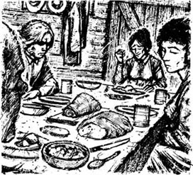
“乔撒姆，我想让你三四点钟过来接玛蒂。”她说，“新来的女孩儿五点钟到车站。玛蒂能赶上六点的火车。”她接着冲玛蒂说道：“哎，你把我那条上好的棉床单怎么了？还有几样东西也不见了。”
玛蒂跟着齐娜走出厨房，剩下两个男人在屋里。
“那么，我想我会三四点钟过来。”乔撒姆对伊桑说道。
干完了上午的活儿，伊桑告诉乔撒姆：“我要去斯塔克菲尔德镇上。告诉她们别等我吃饭了。”
上午的天气晴朗，四周一片寂静，有一丝春天的气息。白雪覆盖的田野在灿烂的阳光下闪着银光。伊桑走在路上，感到又羞愧又生气。玛蒂真的要走了，而他只能无助地站在一边。她会怎么看他？他一边走着，感觉鸟儿的鸣叫就像在嘲笑他。他知道自己必须做些事情，可做什么呢？
他忽然有了个主意。安德鲁·黑尔是个好心人。“要是我告诉他，齐娜病得不轻，我们需要雇个女孩儿来照顾她，或许他能借我些钱。黑尔夫人会相信我的，我肯定。”他想。
他想着这个主意，脚步越来越快。每走一步，他就更确信自己的计划能够成功。只要口袋里有了50美元，那就没有什么能分开他和玛蒂……
一到斯塔克菲尔德镇，他就看见了黑尔家的马拉雪橇，于是急忙走上前去。雪橇停了，黑尔夫人那慈祥的圆脸探了过来，她笑着告诉伊桑，她丈夫正在家里，还说：
“齐娜又病了，我真难过。有你照顾，她可真幸运，你可怜的母亲也是。你的生活真是苦啊，伊桑·弗罗姆。”
黑尔夫人离开了，伊桑感到自己虽然不幸，但不那么孤独了。很久没人像黑尔夫人那样，那么亲切地和他说过话了。黑尔一家有同情心，为他的不幸感到难过。他感到他们肯定会帮助自己。
他沿路向黑尔家走去，走了没几步就停下了。在晴朗的阳光下，忽然间他看清了自己，还有自己的生活。他这个穷人，正盘算着抛弃生病的妻子，让她孤身一个人、身无分文，并对两个为自己感到难过的好心人撒谎，他怎么能做如此无情的事呢？
他转过身，慢慢地向农场走回去。
7．The last ride
7
The last ride
It was about midday when Ethan got home. Zeena was by the fire with a scarf on her head and a book about stomach pains in her hand. She did not move or look up.
'Where's Mattie?' Ethan asked.
Zeena continued to read her book. 'I guess she's packing her case,' she replied.
Ethan went straight upstairs. Mattie's door was closed. 'Matt,' he said in a low voice. There was no answer, so he gently pushed open the door.
Mattie was sitting on her case in her best dress, with her back to the door and her face in her hands. She was crying. Ethan put his hands on her shoulders.
'Matt — oh, don't — oh, Matt!'
'Ethan — I thought you weren't coming back!' she cried, lifting her wet face to his.
He took her in his arms, and kissed her soft hair. Then they heard Zeena calling, and moved away from each other.
He carried her suitcase downstairs, and with every 'tick' of the clock, the pain in his heart grew.
At dinner he could eat nothing. After the meal Zeena sat down by the fire and Mattie began to wash the dishes. Jotham got up from the table and asked Ethan:
'So what time'll I come round for Mattie?'
'You needn't come round; I'm going to drive her over myself,' he answered.
Zeena lifted her head. 'I want you here this afternoon, Ethan. You'll have to get the room ready for the new girl. Jotham can take Mattie.'
'I'm going to drive her over myself,' he repeated in a hard voice. He turned to Mattie: 'You be ready at three, Matt. I've got business in Corbury.'
With those words he left the house. He could feel the hot blood beating in his head, as the anger burned inside him. He hurried through his work. then went to get the horse and sleigh. He remembered the day when he had got the sleigh ready in order to fetch his wife's cousin from the station. It was little more than a year ago, on a soft afternoon just like this, with a whisper of spring in the air. And all the days between then and now came back to him, one by one.
He jumped into the sleigh and drove up to the house. The kitchen was empty, and Mattie's case and coat lay ready by the door. After a moment he heard someone moving about in his study-room. He pushed open the door and saw Mattie standing by the table.
'What are you doing in there, Matt?'
'Just looking round,' she replied.
'Where's Zeena?'
'Gone upstairs. She said she had her pains again.'
'Didn't she say goodbye?'
'No. That was all she said.'
They went back into the kitchen. Ethan looked slowly around the room, thinking, 'In a few hours I shall return here alone. I'm looking at Mattie here for the last time.' He could not believe it; it all seemed so unreal.
'Come on,' he said, opening the door. He helped her into the sleigh, and with a 'Go along!' to the horse, they started off down the hill.
'We got lots of time for a good ride, Matt!' he said, taking her hand in his.
As they left the farm, he did not take the road towards Starkfield, but turned the horse to the right, up the Bettsbridge road. Mattie did not seem surprised.
'Are you going round by Shadow Pond?'
'You knew, didn't you?' he laughed.
The road took them down into a wood, where the trees shone reddish in the afternoon sun, leaving soft blue shadows on the untouched snow. There was a warm stillness in the wood. In the middle was a small icy pond, with sweet-smelling trees all around. It was a quiet, secret place, like the quiet sadness in Ethan's heart. They saw a fallen tree by the icy water, half covered in snow. It was where they had sat once last August, together with a group of young people from Starkfield church.
They sat down now in the same place, and remembered those few happy moments from that hot summer afternoon. Ethan looked at Mattie's hair, and wished he could touch it again. He wanted to tell her that it smelled of the woods in springtime, but he had never learned to say things like that.
When the sun began to go down behind the hill, Mattie said: 'We mustn't stay here any longer.'
As they drove back towards Starkfield, the sky was turning grey, with a cold red over the western hills.
'Matt,' Ethan said at last. 'What'll you do? Can't you ask your father's family for help?'
'I don't want to ask them,' she replied, then after a moment added: 'I guess I'll find something.'
'You know I'd do anything for you —'
'Yes, I know.'
'But I can't —'
She was silent, but he felt her shoulder shaking. 'Oh, Matt,' he cried. 'I wish...'
She turned to him. 'Ethan, I found this.' She held out a piece of paper. It was the unfinished letter to his wife, which he had forgotten to destroy. A painful happiness ran through him. Were Mattie's dreams the same as his? He had to know.
'Do you feel like that too, Matt? Tell me, Matt, tell me!'
'Oh, Ethan, what does it matter now?' she cried. With a sudden movement she tore the letter into pieces and threw them onto the snow. For a moment she was silent, then said in a low voice:
'The first time I thought of you like that was at Shadow Pond. Then I often used to think about you on summer nights when the moon was too bright and I couldn't sleep.'
Her words filled Ethan's heart with sweetness. Darkness began to fall and they drove on in silence for a while.
'I'm fastened hand and foot, Matt. There isn't a thing I can do,' he began again.
'You must write to me sometimes, Ethan.'
'Oh, what can writing do? I want to put my hand out and touch you. I want to take care of you. I want to be there when you're sick and when you're lonely.'
'Oh, Ethan, I wish I was dead!' she cried.
'Don't let's talk that way,' he whispered.
As they arrived in Starkfield, a sleigh with bells passed them. They heard happy children's voices and saw a group of village boys with sleds. They drove on to the top of the Corbury road. On one side was the tall white shape of the church, on the other were the dark shadows of the Varnum trees. The steep slope lay empty and white below them. An idea came to Ethan, to help himself and her through their miserable last hour. He turned to Mattie.
'We never went coasting last night. Shall we go down now? How would you like that?'
'There isn't time!'
'There's as much time as we want,' he said. 'The hired girl can wait. Look, someone's left a sled under the trees.'
He helped her out of the sleigh, and took her by the hand towards the sled. They both sat down on it, with Mattie in front and Ethan behind.
'It's so dark, Ethan. Are you sure you can see?'
'Oh, I can do this with my eyes closed!' he laughed. She laughed with him, then after a moment he cried: 'Now!'
They started off, and soon the sled was flying down the slope, round the corner by the big tree, and down the second slope. They came to a stop, picked up the sled, and began to climb up the hill again.
'It was wonderful!' laughed Mattie.
'Weren't you afraid when we went round the tree?'
'I'm never afraid with you,' she replied.
A deep silence seemed to fall from the starless sky. At each step of their climb Ethan said to himself: 'It's the last time we'll ever walk together.'
When they reached the Varnum trees, Ethan put back the sled. 'I guess this must be Ned Hale's sled,' he said.
'Is this where Ned and Ruth kissed each other?' Mattie whispered, throwing her arms round Ethan. Her lips found his, and Ethan held her close to him.
'Goodbye — goodbye,' she said in a shaking voice, and kissed him again.
'Matt, I can't let you go! What'll we do? What'll we do?'
They stood holding hands like children. Through the stillness they heard the church clock.
'Oh, Ethan, it's already five o'clock. It's time!'
'Time for what? I'm not leaving you now. How can we go anywhere without each other, after this?'
Suddenly she threw her arms round his neck again.
'Ethan! Ethan! I want you to take me down again!'
'Down where?'
'Down there. Into the tree, to finish it all. Then we'll never have to leave each other again.'
'Matt! What are you saying? Are you crazy?'
'No, but I will be crazy if I leave you. Where'll I go without you? You're the only person who's ever been good to me. And there'll be a strange girl sleeping in my bed where I used to lie at night and think of you...'
Her words were like pieces torn from his heart. Now at last he knew that Mattie's feelings were as strong as his. How could he go back to that hated house, to the woman who was waiting for him there?
He held her close and kissed her, but when her face touched his, it was cold and wet with tears. He saw the road down to the station, and through the still air he heard a train. The dark trees covered them in blackness and silence, like a grave. 'Perhaps it'll be like this,' he thought. 'After this I won't feel anything.'
'Come,' she whispered, pulling at his hand. He picked the sled up, and they took their places on it. This time he made her sit behind him. She put her arms round him, and he turned his head and kissed her. She was right — this was better than being apart.
Just as they started, he heard his horse whinny. First came the steep drop, and they seemed to be flying through the air, high up into the cloudy night. Then Ethan saw the big tree at the corner of the road, and he said between his teeth: 'We can do it; I know we can do it —'
As they flew towards the tree, Mattie held him closer and he seemed to feel her heart beating. The tree became bigger and nearer. 'It's waiting for us; it knows,' he thought. But suddenly his wife's face, grim and twisted, appeared before him, and he moved to push the picture away. There was a last moment when the air shot past him like millions of burning stars. And then the tree...
* * *
The sky was still cloudy, but when he looked straight up he saw a single star. What was its name? He used to know, but he couldn't remember. He felt so tired...
Through the deep stillness he heard a little animal making a small, frightened sound. He knew the animal was in terrible pain — he could feel its pain shooting through his own body. He reached out his left arm to help the poor animal, and felt something soft under his hand. He tried to move but could not, because there was a rock, or some heavy thing, lying on him. Then he realized that his hand was on Mattie's face, and the sound was coming from her lips...
He put his face next to hers, and in the darkness he saw her eyes open and heard her say his name.
'Oh, Matt, I thought we'd done it,' he whispered; and far away, up the hill, he heard the horse whinny, and thought: 'I ought to give him his supper...'
straight adv. directly and immediately 直接地，径直地
in order to so that someone can do something or something can happen 为了……
start off to begin to move 动身，启程
painful adj. making you feel upset, ashamed or unhappy 引起痛苦的
fasten v. to hold something very tightly 牢牢控制住
starless adj. with no stars in the sky 没有星星的
whinny v. (of a horse) to make a high sound through its nose and mouth （马）嘶鸣
frightened adj. feeling or showing fear 受惊吓的
最后一段行程
7．最后一段行程
伊桑到家时，大概是中午。齐娜裹着头巾坐在炉火边，手里拿着本跟胃病有关的书。她一动不动，连眼皮也没抬。
“玛蒂呢？”伊桑问道。
齐娜继续看她的书，答道：“我猜她在收拾箱子吧。”
伊桑径直上了楼。玛蒂的房间关着门。“玛蒂。”他低声道。没有应声，于是他轻轻地推开门。
玛蒂穿着她最好的衣服，坐在箱子上，背对着门，双手捂脸，正在哭呢。伊桑把双手放在她肩上。
“玛蒂——哦，不要——哦，玛蒂！”
“伊桑——我以为你不回来了！”她哭着，抬起满是泪水的脸看他。
他抱住她，亲吻她柔软的头发。接着，他们听到齐娜的喊声，于是相互分开来。
他提着她的行李箱下楼，钟声每“滴答”一下，他心中的痛苦就增长一分。
午饭时，他什么都吃不下去。饭后，齐娜又坐在炉火边，玛蒂开始洗碗碟。乔撒姆从桌边站了起来，问伊桑：
“我什么时候来接玛蒂？”
“你不用过来了，我会驾车送她去。”伊桑答道。
齐娜抬起头来。“我想要你下午待在这儿，伊桑。你得给新来的女孩儿准备好房间。乔撒姆可以送玛蒂去。”
“我要亲自送她去。”伊桑冷冷地重复了一句，转身对玛蒂说：“3点钟你准备好，玛蒂。我在科贝里还有事。”
说完这话，他离开了家。他胸中一团怒火，热血在脑中砰砰直蹦。他匆匆干完活儿，就去准备马和雪橇。他记起了自己备好雪橇去车站接妻子的表妹那天。那是在一年多前，也像今天下午一样，天气温和，空气中带有一丝春意。一时间，这一年多来发生的事情一件一件都浮现在他眼前。
他跳上雪橇，驶到家门口。厨房里没人，玛蒂的箱子和外套放在门口。过了一会儿，他听到书房里有人，于是推开门，看见玛蒂站在桌子旁。
“玛蒂，你在那儿干吗？”
“只是看一看。”玛蒂答道。
“齐娜呢？”
“上楼了。她说她又疼上了。”
“她没跟你告别？”
“没，她只说了那些。”
他们走回厨房。伊桑慢慢地环视房间，想道：“再过几个小时，我就要孤身一人回到这里。在这儿看玛蒂最后一眼吧。”他不敢相信，一切看起来都不像是真的。
“来吧。”他说着打开了门，扶玛蒂上了雪橇。“走吧！”他对马吆喝一声，向山下驶去。
“咱们有时间好好走一程，玛蒂！”他说着，握住她的手。
出了农场，他没走去斯塔克菲尔德的路，而是把马头一转，向右奔贝茨布里奇而去。玛蒂并没感到奇怪。
“你要绕夏多池塘的那条路吗？”
“你早就知道，是不？”他笑了。
他们沿路驶进一片树林。午后的阳光下，树木泛着红光，在没有足印的雪地上投下柔和的蓝色阴影。树林中有种温暖的寂静，林中有一个冰封的小小池塘，池塘周围的树木散发着芬芳的气息。这是一片寂静、隐秘的地方，就像伊桑沉默、悲伤的心。他们看见冰封的池水旁有一棵树倒在那儿，一半埋在雪里。他俩还曾在那上面坐过，那是在8月，和一群从斯塔克菲尔德教堂里来的年轻人一起。
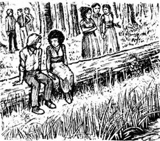
现在他们又在原处坐下，回忆着自那个炎热的夏日午后以来，曾度过的几段美好时光。伊桑看着玛蒂的头发，希望能再轻抚它。他想告诉她，她的头发闻起来有股春日树林的味道，可他从不会说那样的话。
太阳开始落山了，玛蒂说道：“我们不能在这儿待下去了。”
他们驶回斯塔克菲尔德镇的时候，天阴了起来，西边的山上显出一抹冷冷的红色。
“玛蒂，”伊桑终于说道，“你能干什么呢？就不能让你父亲家的亲戚们帮帮忙？”
“我不想求他们。”她答道，过了一会儿又说，“我想我能找到事做。”
“你知道，为了你我什么都愿意做——”
“嗯，我知道。”
“可我不能——”
她沉默了，可他能感到她的肩膀在颤抖。“哦，玛蒂，”他喊道，“我希望……”
她转过身来。“伊桑，我发现了这个。”她手里拿着张纸，是他写给妻子的未完成的信，他忘了毁掉它。他心中滑过一阵苦涩的幸福感。难道玛蒂和他想的一样？他必须知道。
“你也这么想吗，玛蒂？告诉我，玛蒂，告诉我！”
“哦，伊桑，现在还有什么意义吗？”她大声说道。她猛地把信撕成碎片，抛到雪上。她沉默了一会儿，然后低声说道：
“我第一次那么想你的时候是在夏多池塘。从那以后，每当夏夜里月光皎洁，我睡不着的时候，就常常想你。”
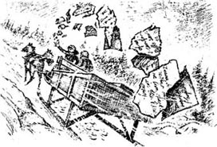
她的话让伊桑心中充满了甜蜜。天开始暗了下来，他们默默地行了一段路。
“我完全被束缚住了，玛蒂。什么都干不了。”他说道。
“你一定要时不时给我写信，伊桑。”
“哦，写信又有什么用呢？我想伸出手来，触摸你，我想照顾你，在你生病、孤独的时候陪着你。”
“哦，伊桑，我真希望我死了！”她大声说道。
“别这么说。”他低语道。
他们到达斯塔克菲尔德镇的时候，一驾马拉雪橇响着铃铛从他们身边驶过。他们听到孩子们幸福的叫声，看到一群村里的男孩儿带着滑雪橇。他们驶上科贝里的最高处，一边是高高的白色教堂，一边是瓦纳姆家的树投下的暗影。脚下的陡坡白雪皑皑，空无一人。伊桑想到一个主意，能让自己和玛蒂熬过这痛苦的最后时刻。他转身对玛蒂说：
“我们昨晚还没玩滑坡呢，现在玩怎么样？你愿意吗？”
“可我们没时间了！”
“我们想要多少时间，就有多少时间。”伊桑说，“雇来的女孩儿可以等着。瞧，有人把滑雪橇落在树下了。”
伊桑扶玛蒂下了雪橇，拉着她的手向滑雪橇走去。两个人坐了上去，玛蒂在前，伊桑在后。
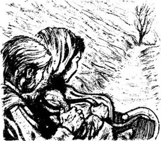
“天好黑，伊桑，你确信能看得见吗？”
“嗬，我闭上眼睛都行！”他笑着说，玛蒂也笑了。过了一会儿，伊桑喊了一嗓子：“下去喽！”
他们出发了，不一会儿，滑雪橇就飞速冲下坡去，绕过拐角处的大树，滑下第二个斜坡。他们停了下来，拿起滑雪橇，又开始爬上山来。
“太棒啦！”玛蒂笑着说。
“从大树旁边滑过的时候你不害怕吗？”
“跟你在一起，我从来不怕。”玛蒂答道。
天上一颗星星都没有，一片沉寂弥漫开来。他们每爬一步，伊桑都对自己说：
“这是我们最后一次走在一起了。”
走到瓦纳姆家的树丛旁时，伊桑把滑雪橇放了回去。“我猜这肯定是内德·黑尔的滑雪橇。”他说。
“内德和露丝就是在这儿互相亲吻的吗？”玛蒂低声问道，她搂住伊桑，将嘴唇贴上了伊桑的嘴唇，伊桑抱紧了她。
“再见了——再见了。”她的声音颤抖着，又亲吻了伊桑一下。
“玛蒂，我不能让你走！我们该怎么办？我们该怎么办？”
他们站在一起，像孩子一样手握着手。寂静中，他们听到了教堂的钟声。
“哦，伊桑，已经5点钟了。到时间了！”
“到什么时间了？我不会离开你的。今后，彼此不在一起，我们怎么能去别的地方？”
突然，玛蒂再次搂住伊桑的脖子。
“伊桑！伊桑！我想让你再带我滑下去！”
“滑到哪儿去？”
“滑到那儿，撞上大树，结束这一切。然后我们就再也不用分离了。”
“玛蒂！你在说什么？你疯了吗？”
“不，我没疯，但要是离开你我会疯的。没有你，我能去哪儿？只有你才对我好。以后会有个陌生的女孩儿睡在我床上，而我曾在夜晚躺在那里，想着你……”
玛蒂的话撕扯着他的心。现在他终于明白，原来玛蒂的情感和自己一样强烈。他怎么能回到那个让人憎恶的家，回到正在那儿等候自己的女人身边呢？
他抱紧她，亲吻着她，她的脸触碰到他时，他感到冷冰冰的，她脸上流满了泪水。他看着通向车站的路，在寂静中听见有火车驶过。黑黢黢的树像坟墓一样，将他们笼罩在一片黑暗和沉寂之中。“或许就该如此。”他想，“这之后，我就再也不会有任何感觉了。”
“来吧。”她低声说道，拉起他的手。他拿起滑雪橇，两个人坐了上去，这回，他让玛蒂坐在他后面。她搂住他，他转过头来，亲了亲她。她是对的——这比起分离要好得多。
刚刚向下滑的时候，伊桑听到他的马在嘶鸣。接着他们就滑下了陡坡，就像在空中飞行，穿过多云的夜空。然后，伊桑看到了拐角的大树，他咬着牙说：“我们能行的，我知道我们能行的——”
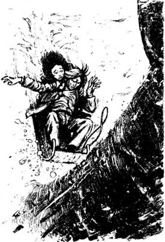
他们冲向大树，玛蒂抱紧了伊桑，伊桑感觉得到她的心跳。树变得越来越大，越来越近。“它在等待我们，它知道的。”伊桑想着。可忽然间，他妻子那张阴沉、扭曲的脸又出现在他眼前，他动起来，想抹去眼前的画面。在最后一刻，一阵风扫过他的身体，像无数颗炽热的星星。然后，是那棵树……
* * *
天空依然阴云密布，可当他直视天空时，却看到了一颗孤星。它叫什么名字？他本来知道的，可现在却想不起来。他感到很累……
在一片沉寂中，他听到有小动物发出微弱、受惊的声音。他知道它一定很痛——他能感觉它的疼痛穿过了自己的身体。他伸出左臂，想帮那可怜的家伙一把，却摸到一堆软软的东西。他想动弹，但却动不了，因为有石头，或者什么重重的东西压在他身上。这时他意识到，他摸到的是玛蒂的脸，而那声音是从她口中发出的……
他把脸凑到她的脸旁，黑暗中，看见她睁着双眼，叫着自己的名字。
“啊，玛蒂，我以为我们成功了呢。”他低声说道。他听到远远的山上马在嘶鸣，心想：“我该给它喂草料了……”
8．Endings
8
Endings
The whining voice stopped as I stepped into Frome's kitchen. There were two women sitting there, and I could not tell which one had been the speaker.
One of them stood up when we entered, and without a word went to bring a dish of food to the table. She was tall and thin, and wore an untidy, shapeless dress. Her lined face and thin lips were of the same yellowish colour, and she had thin grey hair and grey, lifeless eyes.
The other woman was smaller, and she also had grey hair and a thin, bloodless face. She turned her head towards me quickly, but her body did not move at all. Her dark eyes shone with the crazy brightness that is sometimes seen in people with disease of the spine.
The kitchen was a poor place. The few pieces of furniture were of the poorest kind, mostly broken and dirty.
'My, it's cold in here,' said Frome, looking around.
The tall woman said nothing, but the dark-eyed woman answered complainingly, in a thin, whining voice:
'It's Zeena's fault. She fell asleep and the fire went out. I've been so cold, waiting for her to wake up.'
I knew then that it was her voice that I had heard.
The tall woman brought the food to the table. Frome looked at me and said: 'This is my wife, Mrs Frome.' After a moment he added, turning to the figure in the armchair: 'And this is Miss Mattie Silver...'
* * *
Ruth Hale was very pleased to see me return safely in the moming, and most surprised to hear how I had spent the night.
'You must be the first stranger there in twenty years,' she said. 'It's awful to see them, all locked up together in that house. And they're not easy people, any of them. Mattie used to be; before the accident she was a really sweet girl. But not now — she's had too much pain. Now when she and Zeena fight, the look on Ethan's face is enough to break your heart.'
'Yes, it must be awful for them,' I agreed.
'It was just terrible at the beginning,' she went on. 'They brought Mattie here, and I stayed with her all night. Then in the morning she opened her eyes and said... Oh, I don't know why I'm telling you this...' She stopped, crying.
After a few moments she dried her tears and continued: 'Then when the doctors said we could move Mattie, Zeena sent for her and took her back to the farm.'
'And she's been there ever since?' I asked.
'There was no other place for her to go,' Ruth Hale answered simply; and I thought how hard life was for the poor.
'Zeena's cared for the pair of them for over twenty years now,' Ruth Hale went on. 'And there they all are, shut up in that one kitchen.'
Then she looked at me and said in a low voice:
'There was one day, about a week after the accident, when they thought Mattie couldn't live. Well, I say it was a pity she did. People think that's an awful thing to say, but they weren't with her when she first woke up... And I say this, too. All those years with Mattie have destroyed Ethan. The way they are now, there's not much difference between the Fromes up at the farm and the Fromes down in their graves — except that down there they're all silent and the women have to keep quiet.'
untidy adj. not tidy, with things in places where they should not be and do not look nice 不整洁的
send for sb to ask someone to come to you 派人去接
结局
8．结局
我走进弗罗姆家的厨房时，那又尖又细的抱怨声停了下来。屋里坐着两个女人，我不知道刚才说话的是哪一个。
我们进门时，一个女人站了起来，一言不发地走去拿了盘食物放在桌上。她高高瘦瘦的，穿了件邋遢的皱衣裳。布满皱纹的脸和薄薄的嘴唇一样，透着枯黄色。她长着稀疏的灰白头发，阴郁的眼睛毫无生气。
另一个女人个子小些，也长着灰白的头发，脸庞削瘦，毫无血色。她朝我快速地转过头来，可身子却一点儿没动。她的黑眼睛闪着狂躁的光芒，这光芒有时你会在脊椎病患者的眼中看到。
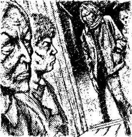
厨房很破旧，仅有的几件家具都是最差的那种，而且大都又破又脏。
“嘿，这儿真冷啊。”弗罗姆说着，看了看四周。
高个儿女人什么都没说，黑眼睛的女人拖着尖细的声音抱怨道：
“都是齐娜的错儿。她睡着了，火灭了。我等着她醒过来，冷极了。”
我这才意识到刚才听到的是她的声音。
高个子女人把食物端上餐桌。弗罗姆看看我，说道：“这是我妻子，弗罗姆太太。”过了一会儿，他转身朝向摇椅中的身影，补充道：“这是玛蒂·西尔弗小姐……”
* * *
第二天早晨，露丝·黑尔看到我安全回来，非常高兴，而听到我如何过夜之后，更是惊讶不已。
“你绝对是20年来第一个去那儿的陌生人。”她说，“看到他们一起困在那房子里，真是件让人难过的事。他们不是随和的人，谁都不是。玛蒂过去是，出事之前，她真是个可爱的女孩儿。可现在——她忍受太多痛苦了。现在，她和齐娜吵架的时候，伊桑脸上的表情能让人心碎。”
“是啊，他们一定挺难的。”我同意黑尔夫人的话。
“开始时，情况非常糟。”她接着说，“他们把玛蒂送到这儿来，我整夜都陪着她。第二天早上，她睁开眼，说……哦，我真不知道为什么要和你说这些……”她停下来，哭了。
过了一会儿，她擦干了眼泪，继续说道：“后来大夫说我们能挪动玛蒂了，齐娜就让人把她接回农庄去了。”
“之后她就一直待在那儿？”我问。
“她没处可去啊。”露丝·黑尔简短地回答道。而我在想，穷人的生活是多么艰难啊。
“到现在，齐娜照顾他们俩二十多年了，”露丝·黑尔继续说，“三个人在一起，都困在厨房里。”
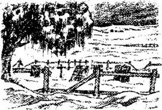
接着她看了看我，低声说：
“有一天，大概是他们出事后一周，大家都认为玛蒂活不成了。唉，要我说，她活着反而更可怜。人们会觉得这么说不好，可当她第一次醒来的时候，他们可不在她身边……我现在也这么说。和玛蒂在一起的这些年毁了伊桑。他们现在这个样子，弗罗姆家的人，在农场里活着的和躺在坟墓里的没什么区别——唯一的区别是躺在坟墓里的都没有声音，那儿的女人不得不把嘴闭上。”
ACTIVITIES: Before Reading
ACTIVITIES
Before Reading
1．Read the story introduction of the book. What kind of story do you think Ethan Frome will be? Use this table to make some sentences.
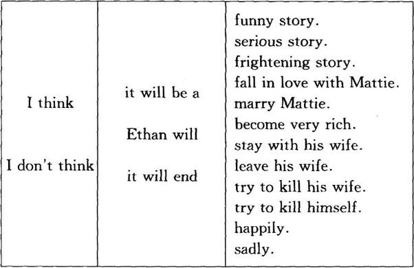
2．Why do you think life was so hard for a poor farmer in Massachusetts a hundred years ago? Do country people have easier lives today? Make some sentences using these ideas.
·horses/modern machinery
·help from the government/help from your family
·long cold winters/illness/travelling difficult
ACTIVITIES: While Reading
ACTIVITIES
While Reading
1．Read Chapter 1. Match these people with the sentences.
Ruth Hale / Denis Eady / Harmon Gow / Ethan Frome / the narrator (the person telling the story)
1) ______ told the narrator about Ethan Frome's accident.
2) ______ was staying in Starkfield because of his work.
3) ______ lived in the finest house in the village.
4) ______ was a successful Starkfield businessman.
5) ______ drove the narrator to the station in his sleigh.
2．At the end of Chapter 1, the narrator knew the answer to only one of these questions. Which one? Can you guess the answers to the other two?
1) Why was Ethan's body so damaged?
2) Why did Ethan's face have a sad, grim look all the time?
3) Whose was the whining voice in Ethan's house?
3．Read Chapters 2 and 3, and then answer these questions.
1) Who danced with a pretty girl in Starkfield church?
2) Who brought hope, life and brightness into Ethan's home?
3) Who went to Bettsbridge to see a new doctor?
4) Who drove his employer's wife to the station?
5) Who said he could not pay Ethan at the moment?
6) Who kissed her boyfriend under the trees by her home?
4．Match these halves of sentences about Chapter 3, and join them with these linking words.
and so / and then / because / but / in order to / when
1) Ethan left his engineering studies and came home...
2) His father died, ...
3) His cousin Zeena came to the farm...
4) After his mother died, Ethan was afraid of being alone...
5) They wanted to sell the farm and move to the town, ...
6) Mattie Silver came to live with them...
7) ______ his mother grew more and more silent and crazy.
8) ______ his father had had a bad accident.
9) ______ then Zeena became sickly and silent too.
10) ______ he asked Zeena to marry him.
11) ______ help Zeena with the housework.
12) ______ old Mrs Frome was dying.
5．Read Chapters 4 to 6. Choose the best question-word for these questions, and then answer them.
What / Why
1) ... was Ethan looking forward to an evening at home?
2) ... fell off the table and broke on the floor?
3) ... was Mattie so worried about it?
4) ... did Ethan and Mattie talk about that evening?
5) ... did Ethan kiss Mattie?
6) ... did Ethan take so long to come home with the glue?
7) ... was the news about Zeena's health?
8) ... was Ethan so angry about the hired girl?
9) ... did Zeena say Mattie had to leave?
10) ... wouldn't Mattie be able to find work in the town?
11) ... was Ethan planning to do before he saw the cost of tickets to the West?
12) ... do you think Zeena seemed so lively and busy?
13) ... didn't Ethan ask the Hales to lend him money?
6．Before you read Chapter 7, can you guess the answers to these questions?
1) Will Ethan think of another way to get some money?
2) Will Mattie leave Starkfield alone, or with Ethan?
3) Whose ride do you think it will be? Where to? Why?
7．Read Chapter 7. What does the word 'it' mean in these sentences?
1) It was a quiet, secret place, like the quiet sadness in Ethan's heart.
2) 'It was wonderful!' laughed Mattie.
3) 'Perhaps it'll be like this,' he thought. 'After this I won't feel anything.'
4) 'Oh, Matt, I thought we'd done it.' he whispered.
8．Read Chapter 8, and then anwser these questions.
1) Whose was the whining voice in Ethan's house?
2) Why had Mattie had to stay with the Fromes?
3) Ruth Hale spoke of the Fromes 'up at the farm' and 'down in their graves'. Which did she think were luckier?
ACTIVITIES: After Reading
ACTIVITIES
After Reading
1．Choose the best words to complete this text about Zeena.
tall / lively / young / silent / shining / cold / thin / soft / milky white / grey / dark / yellowish / whining / sweet / smiles / complains / her own ill health / the beauty of nature
Zeena is a ______, ______ woman, with ______ eyes and ______ lips. Her hair is ______, and her skin is ______. Zeena has a ______ voice, and she ______ a lot. She loves talking about ______.
Now use the rest of the words to write a text about Mattie.
2．Imagine that Mattie wrote to a friend about her problem. Complete her letter (use as many words as you like).
Dear Jessie,
Please help me, I just don't know ______! I'm so in love with Ethan, and I think he feels ______. Last night he ______ from a dance, and when we stood together in the moonlight, he ______, I'm sure. But ______ has noticed something, and I'm so afraid that she'll ______. Oh, what can I do? Should I tell Ethan ______? Or should I keep quiet? Or marry Denis, the shopkeeper's boring son? Maybe I should ______? But where could I go? Oh, Jessie, Please ______ soon!
Your dear friend, Mattie
3．How would you reply to Mattie's letter? Write and tell her what you think she should do. Use these phrases.
· I think you should / ought to...
· I don't think you should / ought to...
· Why don't you...?
4．When the narrator asked Ruth Hale about Ethan's accident, perhaps their conversation continued like this. Put the conversation in the right order, and write in the speakers' names. Ruth Hale speaks first (number 5.)
1) ______ 'No, she was a Bettsbridge girl. Her father used to own a big company in town, but Mattie didn't have a dollar in her pocket when Zeena brought her here?'
2) ______ 'So Mattie was in the accident as well?'
3) ______ 'It was Mattie Silver, his wife's cousin.'
4) ______ 'So she had to go and live with the Fromes?'
5) ______ 'Yes, I knew them both... it was awful...'
6) ______ 'Was she from Starkfield too?'
7) ______ 'Silver was a bad businessman. He borrowed a lot, but couldn't pay it back. When he died, Mattie was left with nothing at all, and nobody to help her.'
8) 'Both? Who was the other person?'
9) ______ 'Oh yes, she was hurt worse than Ethan. She can't walk at all, poor girl. Never leaves the house.'
10) ______ 'What happened to her father's money?'
11) ______ 'That's right. Twenty-five years she's been there now — twenty-four since the accident.'
5．A police inspector questioned Jotham Powell about what happened at the Frome farm in the days before the accident. Complete the inspector's side of the conversation.
INSPECTOR: SO, Mr Powell ______?
JOTHAM: Wednesday? Yes, I remember. Mr Frome and I were down at the saw-mill early, loading wood for Mr Hale.
INSPECTOR: And ______?
JOTHAM: About midday, I guess. Then Mr Frome and I went up to the house for a bite to eat.
INSPECTOR: ______?
JOTHAM: Yes, sir, they were both there. Miss Mattie was making coffee, and Mrs Frome was dressed in her travelling clothes, ready to leave for the station.
INSPECTOR: ______?
JOTHAM:Yes, I did. She caught the two o'clock train.
INSPECTOR: ______?
JOTHAM: NO, I didn't see him again. I called in for a drop of coffee later, but Miss Mattie was alone then.
INSPECTOR: ______?
JOTHAM: She came home on Thursday. Mr Frome sent me to the station to fetch her after dinner.
INSPECTOR: ______?
JOTHAM: Well, on Friday morning Mrs Frome said I had to take Mattie to the station, and bring back the new girl.
INSPECTOR: _____?
JOTHAM: Because at dinner Mr Frome said he'd drive Miss Mattie to the station himself.
6．Here is a report of the accident in the newspaper. Correct the mistakes in the report, and think of a suitable title for it.
Two young people were killed on a coasting slope last Friday evening. The accident happened at about ten o'clock on a hillside in Corbury. Mr Ethan Frome, a Starkfield builder, and his cousin, Miss Mattie Silver, were on their way back from a dance. Mr Frome, who had never coasted before, went down a steep slope, with Miss Silver sitting in front of him on the sled. Half way down, the sled crashed into a big rock. Several people saw the accident.
7．Look at these ideas about the story.
1) It was Zeena's fault. She was cold, bitter, and jealous, and only cared about herself.
2) It was Mattie's fault. She was young and pretty, and she tried to take Ethan away from his wife, which was a very bad thing to do.
3) It was Ethan's fault. He was older than Mattie, and knew more about life than she did. He knew it was a stupid thing to do.
4) It was nobody's fault. It all happened because of their poverty. Poverty brought them all together to begin with, and poverty was their prison to the end.
Decide which of the ideas above is closest to...
a) what Ruth Hale thought.
b) what the narrator thought.
c) what you think.
封底
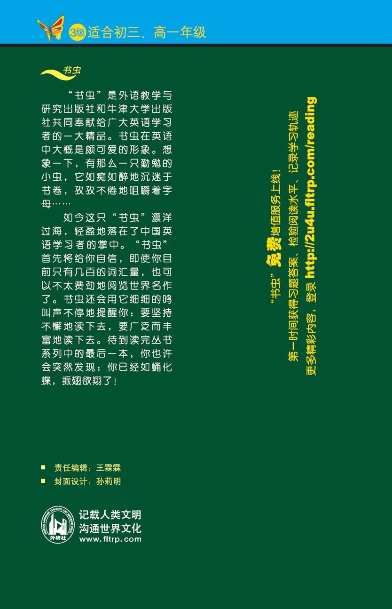